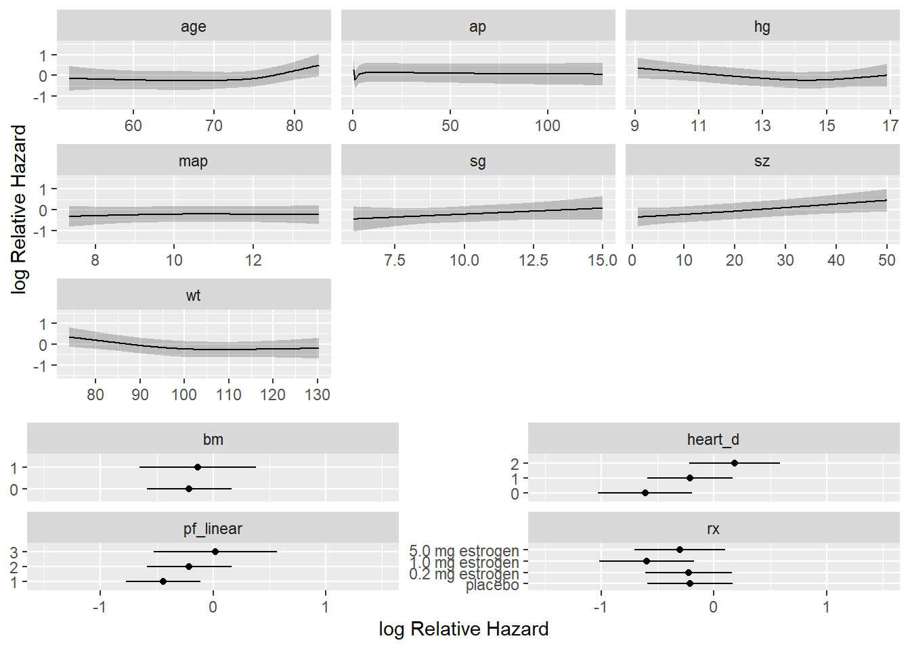
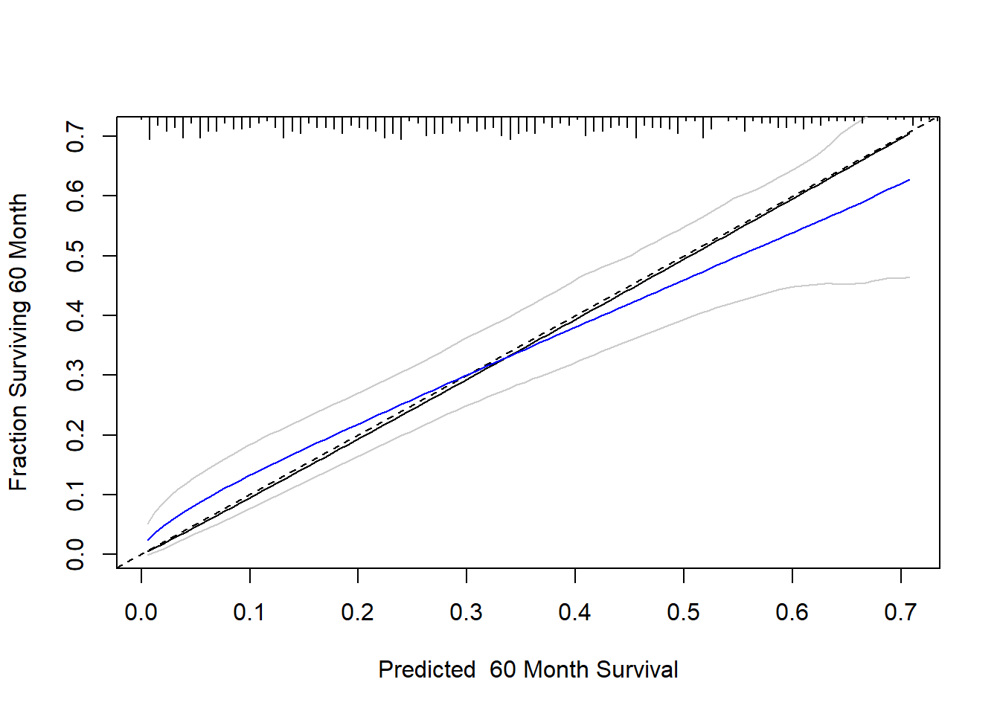

library(Hmisc)
library(survival)
library(rms)
library(scales)
library(ggplot2)
library(latex2exp)
library(knitr)
library(kableExtra)
library(modelsummary)
getHdata(prostate)Cox model case study
R
Survival analysis
Analyzing prostate cancer dataset using a Cox model. The primary goal is to discover patterns in survival, and to do an analysis of covariance to assess the effect of treatment while adjusting for patient heterogeneity. Prediction is a secondary goal.
Data
We consider the 506-patient prostate cancer dataset from Byar and Green. These data were from a randomized trial comparing four treatments for stage 3 and 4 prostate cancer, with almost equal numbers of patients on placebo and each of three doses of estrogen. Four patients had missing values on all of the following variables: wt, pf, hx, sbp, dbp, ekg, hg, bm; two of these patients were also missing sz. These patients are excluded from consideration.
We will follow guidelines given in the book Regression Modeling Strategies by Frank Harrell and his general approach to this dataset in Chapter 21. The analysis is expanded compared to what was done in the book.
There are 354 deaths among the 502 patients and we will use a multivariate survival model to explain the time until death (of any cause).
Loading data
We start by showing summary of all the variables in the dataset
Click here to see output
Preprocess data for function datasummary_skim.
prostate_summary <- prostate
# Convert 'labelled' columns to numeric
prostate_summary[] <- lapply(prostate_summary, function(x) {
if (inherits(x, "labelled")) {
as.numeric(x)
} else {
x
}
})
prostate_summary$bm <- as.factor(prostate$bm)
prostate_summary$stage <- as.factor(prostate$stage)
prostate_summary$hx <- as.factor(prostate$hx)
prostate_summary <- prostate_summary[
,
!names(prostate) %in% c("patno", "sdate")
]
factors <- sapply(prostate_summary, is.factor)Summary of factor variables in data
datasummary_skim(prostate_summary[factors])| N | % | ||
|---|---|---|---|
| stage | 3 | 289 | 57.6 |
| 4 | 213 | 42.4 | |
| rx | placebo | 127 | 25.3 |
| 0.2 mg estrogen | 124 | 24.7 | |
| 1.0 mg estrogen | 126 | 25.1 | |
| 5.0 mg estrogen | 125 | 24.9 | |
| status | alive | 148 | 29.5 |
| dead - prostatic ca | 130 | 25.9 | |
| dead - heart or vascular | 96 | 19.1 | |
| dead - cerebrovascular | 31 | 6.2 | |
| dead - pulmonary embolus | 14 | 2.8 | |
| dead - other ca | 25 | 5.0 | |
| dead - respiratory disease | 16 | 3.2 | |
| dead - other specific non-ca | 28 | 5.6 | |
| dead - unspecified non-ca | 7 | 1.4 | |
| dead - unknown cause | 7 | 1.4 | |
| pf | normal activity | 450 | 89.6 |
| in bed < 50% daytime | 37 | 7.4 | |
| in bed > 50% daytime | 13 | 2.6 | |
| confined to bed | 2 | 0.4 | |
| hx | 0 | 289 | 57.6 |
| 1 | 213 | 42.4 | |
| ekg | normal | 168 | 33.5 |
| benign | 23 | 4.6 | |
| rhythmic disturb & electrolyte ch | 51 | 10.2 | |
| heart block or conduction def | 26 | 5.2 | |
| heart strain | 150 | 29.9 | |
| old MI | 75 | 14.9 | |
| recent MI | 1 | 0.2 | |
| bm | 0 | 420 | 83.7 |
| 1 | 82 | 16.3 |
Summary of continuous variables in data
datasummary_skim(prostate_summary[!factors])| Unique | Missing Pct. | Mean | SD | Min | Median | Max | Histogram | |
|---|---|---|---|---|---|---|---|---|
| dtime | 76 | 0 | 36.1 | 23.3 | 0.0 | 34.0 | 76.0 | ![](data:image/png;base64, iVBORw0KGgoAAAANSUhEUgAABLAAAAGQCAMAAACJa2lsAAAABlBMVEUAAAD///+l2Z/dAAANiElEQVR4nO3Usa1FNwxEwe/+m3aqwIHFC2JJvZkKBC1x/v4BWOIv/QCA/0uwgDUEC1hDsIA1BAtYQ7CANQQLWEOwgDUEC1hDsIA1BAtYQ7CANQQLWOMqWH+DdH0IMJdgAWsIFrCGYAFrCBawhmABawgWsIZgAWsIFrCGYAFrCBawhmABawgWsIZgAWsIFrCGYAFrCBawhmABawgWsIZgAWsIFrCGYAFrCBawhmABawgWsIZgAWsIFrCGYAFrCBawhmABawgWsIZgAWsIFrCGYAFrCBawhmABawgWj0tf6in9F/sJFo9LX+op/Rf7CRaPS1/qKf0X+wkWj0tf6in9F/sJFo9LX+op/Rf7CRaPS1/qKf0X+wkWj0tf6in9F/sJFo9LX+op/Rf7CRaPS1/qKf0X+wkWj0tf6in9F/sJFo9LX+op/Rf7CRaPS1/qKf0X+wkWj0tf6in9F/sJFo9LX+op/Rf7CRaPS1/qKf0X+wkWj0tf6in9F/sJFo9LX+op/Rf7CRaPS1/qKf0X+wkWj0tf6in9F/sJFo9LX+op/Rf7CRaPS1/qKf0X+wkWj0tf6in9F/sJFo9LX+op/Rf7CRaPS1/qKf0X+wkWj0tf6in9F/sJFo9LX+op/Rf7CRaPS1/qKf0X+wkWj0tf6in9F/sJFo9LX+op/Rf7CRaPS1/qKf0X+wkWj0tf6in9F/sJFo9LX+op/Rf7CRaPS1/qKf0X+wkWj0tf6in9F/sJFo9LX+op/Rf7CRaPS1/qKf0X+wkWj0tf6in9F/sJFo9LX+op/Rf7CRaPS1/qKf0X+wkWj0tf6in9F/sJFo9LX+op/Rf7CRaPS1/qKf0X+wkWj0tf6in9F/sJFo9LX+pQ6VmKBIvHpS91qPQsRYLF49KXOlR6liLB4nHpSx0qPUuRYPG49KUOlZ6lSLB4XPpSh0rPUiRYPC59qUOlZykSLB6XvtSh0rMUCRaPS1/qUOlZigSLx6Uvdaj0LEWCxePSlzpUepYiweJx6UsdKj1LkWB9lv6JU/ovJkpvMlR6liLB+iz9E6f0X0yU3mSo9CxFgvVZ+idO6b+YKL3JUOlZigTrs/RPnNJ/MVF6k6HSsxQJ1mfpnzil/2Ki9CZDpWcpEqzP0j9xSv/FROlNhkrPUiRYn6V/4pT+i4nSmwyVnqVIsD5L/8Qp/RcTpTcZKj1LkWB9lv6JU/ovJkpvMlR6liLB+iz9E6f0X0yU3mSo9CxFgvVZ+idO6b+YKL3JUOlZigTrs/RPnNJ/MVF6k6HSsxQJ1mfpnzil/2Ki9CZDpWcpEqzP0j9xSv/FROlNhkrPUiRYn6V/4pT+i4nSmwyVnqVIsD5L/8Qp/RcTpTcZKj1LkWB9lv6JU/ovJkpvMlR6liLB+iz9E6f0X0yU3mSo9CxFgvVZ+idO6b+YKL3JUOlZigTrs/RPnNJ/MVF6k6HSsxQJ1mfpnzil/2Ki9CZDpWcpEqzP0j9xSv/FROlNhkrPUiRYn6V/4pT+i4nSmwyVnqVIsD5L/8Qp/RcTpTcZKj1L0dpg8V+6zmSz9CZDpWcpEqyndJ3JZulNhkrPUiRYT+k6k83SmwyVnqVIsJ7SdSabpTcZKj1LkWA9petMNktvMlR6liLBekrXmWyW3mSo9CxFgvWUrjPZLL3JUOlZigTrKV1nsll6k6HSsxQJ1lO6zmSz9CZDpWcpEqyndJ3JZulNhkrPUiRYT+k6k83SmwyVnqVIsJ7SdSabpTcZKj1LkWA9petMNktvMlR6liLBekrXmWyW3mSo9CxFgvWUrjPZLL3JUOlZigTrKV1nsll6k6HSsxQJ1lO6zmSz9CZDpWcpEqyndJ3JZulNhkrPUiRYT+k6k83SmwyVnqVIsJ7SdSabpTcZKj1LkWA9petMNktvMlR6liLBekrXmWyW3mSo9CxFgvWUrjPZLL3JUOlZigTrKV1nsll6k6HSsxQJ1lO6zmSz9CZDpWcpEqyndJ3JZulNhkrPUiRYT+k6k83SmwyVnqVIsJ7SdSabpTcZKj1LkWA9petMNktvMlR6liLBekrXmWyW3mSo9CxFgvWUrjPZLL3JUOlZigTrKV1nsll6k6HSsxQJ1lO6zmSz9CZDpWcpEqyndJ3JZulNhkrPUiRYT+k6k83SmwyVnqVIsJ7SdSabpTcZKj1LkWA9petMNktvMlR6liLBekrXmWyW3mSo9CxFgvWUrjPZLL3JUOlZigSLFl0Hey/9E0OlZykSLFp0Hey99E8MlZ6lSLBo0XWw99I/MVR6liLBokXXwd5L/8RQ6VmKBIsWXQd7L/0TQ6VnKRIsWnQd7L30TwyVnqVIsGjRdbD30j8xVHqWIsGiRdfB3kv/xFDpWYoEixZdB3sv/RNDpWcpEixadB3svfRPDJWepUiwaNF1sPfSPzFUepYiwaJF18HeS//EUOlZigSLFl0Hey/9E0OlZykSLFp0Hey99E8MlZ6lSLBo0XWw99I/MVR6liLBokXXwd5L/8RQ6VmKBIsWXQd7L/0TQ6VnKRIsWnQd7L30TwyVnqVIsGjRdbD30j8xVHqWIsGiRdfB3kv/xFDpWYoEixZdB3sv/RNDpWcpEixadB3svfRPDJWepUiwaNF1sPfSPzFUepYiwaJF18HeS//EUOlZigSLFl0Hey/9E0OlZykSLFp0Hey99E8MlZ6lSLBo0XWw99I/MVR6liLBokXXwd5L/8RQ6VmKBIsWXQd7L/0TQ6VnKRIsWnQd7L30TwyVnqVIsGjRdbD30j8xVHqWIsGiRdfB3kv/xFDpWYoEixZdB3sv/RNDpWcpEixadB3svfRPDJWepUiwaNF1sPfSPzFUepYiwaJF18HeS//EUOlZigSLFl0Hey/9E0OlZykSLFp0Hey99E8MlZ6lSLBo0XWw99I/MVR6liLBokXXwd5L/8RQ6VmKBIsWXQd7L/0TQ6VnKRIsWnQd7L30TwyVnqVIsGjRdbD30j8xVHqWIsGiRdfB3kv/xFDpWYoEixZdB3sv/RNDpWcpEixadB3svfRPDJWepUiwaNF1sPfSPzFUepYiwaJF18HeS//EUOlZigSLFl0Hey/9E0OlZykSLFp0Hey99E8MlZ6lSLBo0XWw99I/MVR6liLBokXXwd5L/8RQ6VmKBIsWXQd7L/0TQ6VnKRIsWnQd7L30TwyVnqVIsGjRdbD30j8xVHqWIsGiRdfB3kv/xFDpWYoEixZdB3sv/RNDpWcpEixadB3svfRPDJWepUiwaNF1sPfSPzFUepYiwaJF18HeS//EUOlZigSLFl0Hey/9E0OlZykSLFp0Hey99E8MlZ6lSLBo0XWw99I/MVR6liLBokXXwd5L/8RQ6VmKBIsWXQd7L/0TQ6VnKRIsWnQd7L30TwyVnqVIsGjRdbD30j8xVHqWIsGiRdfB3kv/xFDpWYoEixZdB3sv/RNDpWcpEixadB3svfRPDJWepUiwaNF1sPfSPzFUepYiwaJF18HeS//EUOlZigSLFl0Hey/9E0OlZykSLFp0Hey99E8MlZ6lSLBo0XWw99I/MVR6liLBokXXwd5L/8RQ6VmKBIsWXQd7L/0TQ6VnKRIsWnQd7L30TwyVnqVIsGjRdbD30j8xVHqWIsGiRdfB3kv/xFDpWYoEixZdB3sv/RNDpWcpEixadB3svfRPDJWepUiwaNF1sPfSPzFUepYiwaJF18HeS//EUOlZigSLFl0Hey/9E0OlZykSLFp0Hey99E8MlZ6lSLBo0XWw99I/MVR6liLBokXXwd5L/8RQ6VmKBIsWXQd7L/0TQ6VnKRIsWnQd7L30TwyVnqVIsGjRdbD30j8xVHqWIsGiRdfB3kv/xFDpWYoEixZdB3sv/RNDpWcpEixadB3svfRPDJWepUiwaNF1sPfSPzFUepYiwaJF18HeS//EUOlZigSLFl0Hey/9E0OlZykSLFp0Hey99E8MlZ6lSLDgF3UVpZlgwS/qKkozwYJf1FWUZoIFv6irKM0EC35RV1GaCRb8oq6iNBMs+EVdRWkmWPCLuorSTLCAKMEC1hAsYA3BAtYQLGANwQLWECxgDcEC1hAsYA3BAtYQLGANwQLWECxgDcEC1hAsYA3BAtYQLGANwQLWECxgDcEC1hAsYA3BAtYQLGANwQLWECxgDcEC1hAsYA3BAtYQLGANwQLWECxgDcEC1hAsYA3BAtYQLGANwQLWECxgDcEC1hAsYA3BAtYQLGANwQLWECxgDcEC1hAsYA3BAtYQLGANwQLWECxgDcEC1hAsYA3BAtYQLGANwQLWECxgDcEC1hAsYA3BAtYQLGANwQLWECxgDcEC1hAsYA3BAtYQLGANwQLWECxgDcEC1hAsYA3BAtYQLGANwQLWECxgDcEC1hAsYA3BAtYQLGANwQLWECxgDcEC1hAsYA3BAtYQLGANwQLWECxgDcEC1hAsYA3BAtYQLGANwQLWECxgDcEC1hAsYA3BAtYQLGANwQLWECxgDcEC1hAsYA3BAtYQLGANwQLWECxgDcEC1hAsYA3BAtYQLGANwQLWECxgDcEC1hAsYA3BAtZoCxZAkmABawgWsIZgAWsIFrCGYAFrCBawhmABawgWsIZgAWsIFrCGYAFrCBawhmABa/wLCQEZrWSEVF4AAAAASUVORK5CYII=) |
| age | 42 | 0 | 71.5 | 7.1 | 48.0 | 73.0 | 89.0 | ![](data:image/png;base64, iVBORw0KGgoAAAANSUhEUgAABLAAAAGQCAMAAACJa2lsAAAABlBMVEUAAAD///+l2Z/dAAALzUlEQVR4nO3UgZEDyw1Dwe/8k3YEtOQq6x7p6Y5gFxjin38BHPFP/QEA3zJYwBkGCzjDYAFnGCzgDIMFnGGwgDMMFnCGwQLOMFjAGQYLOMNgAWcYLOAMg8U+/5Tqn+c/UQ/7GCwG6mEfg8VAPexjsBioh30MFgP1sI/BYqAe9jFYDNTDPgaLgXrYx2AxUA/7GCwG6mEfg8VAPexjsBioh30MFgP1sI/BYqAe9jFYDNTDPgaLgXrYx2AxUA/7GCwG6mEfg8VAPexjsBioh30MFgP1sI/BYqAe9jFYDNTDPgaLgXrYx2AxUA/7GCwG6mEfg8VAPexjsBioh30MFgP1sI/BYqAe9jFYDNTDPgaLgXrYx2AxUA/7GCwG6mEfg8VAPexjsBioh30MFgP1sI/BYqAe9jFYDNTDPgaLgXrYx2AxUA/7GCwG6mEfg8VAPexjsBioh30MFgP1sI/BYqAe9jFYDNTDPgaLgXrYx2AxUA/7GCwG6mEfg8VAPexjsBioh30MFgP1sI/BYqAe9jFYDNTDPgaLgXrYx2AxUA/7GCwG6mEfg8VAPexjsBioh30MFgP1sI/BYqAe9jFYDNTDPgaLgXrYx2AxUA/7GCwG6mEfg8VAPexjsBioh30MFgP1sI/BYqAe9jFYDNTDPgaLgXrYx2AxUA/7GCwG6mEfg8VAPexjsBioh30MFgP1sI/BYqAe9jFYDNTDPgaLgXrYx2AxUA/7GCwG6mEfg8VAPexjsBioh30MFgP1sI/BYqAe9jFYDNTDPgaLgXrYx2AxUA/7GCwG6mEfg8VAPexjsBioh30MFgP1sI/BYqAe9jFYDNTDPgaLgXrYx2AxUA/7GCwG6mEfg8VAPexjsBioh30MFgP1sI/BYqAe9jFYDNTDPgaLgXrYx2AxUA/7GCwG6mEfg8VAPexjsBioh30MFgP1sI/BYqAe9jFYDNTDPgaLgXrYx2AxUA/7GCwG6mEfg8VAPexjsBioh30MFgP1sI/BYqAe9jFYDNTDPgaLgXrYx2AxUA/7GCwG6mEfg8VAPexjsBioh30MFgP1sI/BYqAe9jFYDNTDPgaLgXrYx2AxUA/7GCwG6mEfg8VAPexjsBioh30MFgP1sI/BYqAe9jFYDNTDPgaLgXrYx2AxUA/7GCwG6mEfg8VAPexjsBioh30MFgP1sI/BYqAe9jFYDNTDPgaLgXrYx2AxUA/7GCwG6mEfg8VAPexjsBioh30MFgP1sI/BYqAe9jFYDNTDPulghercD5AR+9TDUalzP0BG7FMPR6XO/QAZsU89HJU69wNkxD71cFTq3A+QEfvUw1Gpcz9ARuxTD0elzv0AGbFPPRyVOvcDZMQ+9XBU6twPkBH71MNRqXM/QEbsUw9Hpc79ABmxTz0clTr3A2TEPvVwVOrcD5AR+9TDUalzP0BG7FMPR6XO/QAZsU89HJU69wNkxD71cFTq3A+QEfvUw1Gpcz9ARuxTD0elzv0AGbFPPRyVOvcDZMQ+9XBU6twPkBH71MNRqXM/QEbsUw9Hpc79ABmxTz0clTr3A2TEPvVwVOrcD5AR+9TDUalzP0BG7FMPR6XO/QAZsU89HJU69wNkxD71cFTq3A+QEfvUw1Gpcz9ARuxTD0elzv0AGbFPPRyVOvcDZMQ+9XBU6twPkBH71MNRqXM/QEbsUw9Hpc79ABmxTz0clTr3A2TEPvVwVOrcD5AR+9TDUalzP0BG7FMPR6XO/QAZsU89HJU69wNkxD71cFTq3A+QEfvUw1Gpcz9ARuxTD0elzv0AGbFPPRyVOvcDZMQ+9XBU6twPkBH71MNRqXM/QEbsUw9Hpc79ABmxTz0clTr3A2TEPvVwVOrcD5AR+9TDUalzP0BG7FMPR6XO/QAZsU89HJU69wNkxD71cFTq3A+QEfvUw1Gpcz9ARuxTD0elzv0AGbFPPRyVOvcDZMQ+9XBU6twPkBH71MNRqXM/QEbsUw9Hpc79ABmxTz0clTr3A2TEPvVwVOrcD5AR+9TDUalzP0BG7FMPR6XO/QAZsU89HJU69wNkxD71cFTq3A+QEfvUw1Gpcz9ARuxTD0elzv0AGbFPPRyVOvcDZMQ+9XBU6twPkBH71MNRqXM/QEbsUw9Hpc79ABmxTz0clTr3A2TEPvVwVOrcD5AR+9TDUalzP0BG7FMPR6XO/QAZsU89HJU69wNkxD71cFTq3A+QEfvUw1Gpcz9ARuxTD0elzv0AGbFPPRyVOvcDZMQ+9XBU6twPkBH71MNRqXM/QEbsUw9Hpc79ABmxTz0clTr3A2TEPvVwVOrcD5AR+9TDUalzP0BG7FMPR6XO/QAZsU89HJU69wNkxD71cFTq3A+QEfvUw1Gpcz9ARuxTD0elzv0AGbFPPRyVOvcDZMQ+9XBU6twPkBH71MNRqXM/QEbsUw9Hpc79ABmxTz0clTr3A2TEPvVwVOrcD5AR+9TDUalzP0BG7FMPR6XO/QAZsU89HJU69wNkxD71cFTq3A+QEfvUw1Gpcz9ARuxTD0elzv0AGbFPPRyVOvcDZMQ+9XBU6twPkBGD+nofVFd+gIwY1Nf7oLryA2TEoL7eB9WVHyAjBvX1Pqiu/AAZMaiv90F15QfIiEF9vQ+qKz9ARgzq631QXfkBMmJQX++D6soPkBGD+nofVFd+gIwY1Nf7oLryA2TEoL7eB9WVHyAjBvX1Pqiu/AAZMaiv90F15QfIiEF9vQ+qKz9ARgzq631QXfkBMmJQX++D6soPkBGD+nofVFd+gIwY1Nf7oLryA2TEoL7eB9WVHyAjBvX1Pqiu/AAZMaiv90F15QfIiEF9vQ+qKz9ARgzq631QXfkBMmJQX++D6soPkBGD+nofVFd+gIwY1Nf7oLryA2TEoL7eB9WVHyAjBvX1Pqiu/AAZMaiv90F15QfIiEF9vQ+qKz9ARgzq631QXfkBMmJQX++D6soPkBGD+nofVFd+gIwY1Nf7oLryA2TEoL7eB9WVHyAjBvX1Pqiu/AAZMaiv90F15QfIiEF9vQ+qKz9ARgzq631QXfkBMmJQX++D6soPkBGD+nofVFd+gIwY1Nf7oLryA2TEoL7eB9WVHyAjBvX1Pqiu/AAZMaiv90F15QfIiEF9vQ+qKz9ARgzq631QXfkBMmJQX++D6soPkBGD+nofVFd+gIwY1Nf7oLryA2TEoL7eB9WVHyAjBvX1Pqiu/AAZrVZfEH+qfm4HyGi1+oL4U/VzO0BGq9UXxJ+qn9sBMlqtviD+VP3cDpDRavUF8afq53aAjFarL4g/VT+3A2S0Wn1B/Kn6uR0go8/qZ8wr6pd+gIw+q58xr6hf+gEy+qx+xryifukHyOiz+hnzivqlHyCjz+pnzCvql36AjD6rnzGvqF/6ATL6rH7GvKJ+6QfI6LP6GfOK+qUfIKPP6mfMK+qXfoCMPqufMa+oX/oBMvqsfsa8on7pB8jos/oZ84r6pR8go8/qZ8wr6pd+gIw+q58xr6hf+gEy+qx+xryifukHyOiz+hnzivqlHyCjz+pnzCvql36AjD6rnzGvqF/6ATL6rH7GvKJ+6QfI6LP6GfOK+qUfIKPP6mfMK+qXfoCMPqufMa+oX/oBMvqsfsa8on7pB8jos/oZ84r6pR8go8/qZ8wr6pd+wJWM6qcEv1df2QFXMqqfEvxefWUHXMmofkrwe/WVHXAlo/opwe/VV3bAlYzqpwT/3+oL/9KZ7wR+qL7wL535TuCH6gv/0pnvBH6ovvAvnflO4IfqC//Sme8Efqi+8C+d+U7gh+oL/9KZ7wR+qL7wL535TuCH6gv/0pnvBH6ovvAvnflO4IfqC//Sme8Efqi+8C+d+U7gh+oL/9KZ7wR+qL7wL535TuCH6gv/0pnvBH6ovvAvnflO4IfqC//Sme8Efqi+8C/9V99ZZwr8yK8W5n/MYAEGC+AbBgs4w2ABZxgs4AyDBZxhsIAzDBZwhsECzvjZYAGUDBZwhsECzjBYwBkGCzjDYAFnGCzgDIMFnGGwgDMMFnCGwQLOMFjAGQYLOMNgAWf8G/4bm6TiHvsxAAAAAElFTkSuQmCC) |
| wt | 68 | 0 | 99.0 | 13.4 | 69.0 | 98.0 | 152.0 | ![](data:image/png;base64, iVBORw0KGgoAAAANSUhEUgAABLAAAAGQCAMAAACJa2lsAAAABlBMVEUAAAD///+l2Z/dAAAMr0lEQVR4nO3UQRLjNhAEwfX/P+0bbtowghYKHGW+gER3z59/AF7iT/0BAP+VgwW8hoMFvIaDBbyGgwW8hoMFvIaDBbyGgwW8hoMFvIaDBbyGgwW8hoMFvIaDBbyGg1X5c1j9v/A/0OOKgwXb9LjiYME2Pa44WLBNjysOFmzT44qDBdv0uOJgwTY9rjhYsE2PKw4WbNPjioMF2/S44mDBNj2uOFiwTY8rDhZs0+OKgwXb9LjiYME2Pa44WLBNjysOFmzT44qDBdv0uOJgwTY9rjhYsE2PKw4WbNPjioMF2/S44mDBNj2uOFiwTY8rDhZs0+OKgwXb9LjiYME2Pa44WLBNjysOFmzT44qDBdv0uOJgwTY9rjhYsE2PKw4WbNPjioMF2/S44mDBNj2uOFiwTY8rDhZs0+OKgwXb9LjiYME2Pa44WLBNjysOFmzT44qDBdv0uOJgwTY9rjhYsE2PKw4WbNPjioMF2/S44mDBNj2uOFiwTY8rDhZs0+OKgwXb9LjiYME2Pa44WLBNjysOFmzT44qDBdv0uOJgwTY9rjhYsE2PKw4WbNPjioMF2/S44mDBNj2uOFiwTY8rDhZs0+OKgwXb9LjiYME2Pa44WLBNjysOFmzT44qDBdv0uOJgwTY9rjhYsE2PKw4WbNPjioMF2/S44mDBNj2uOFiwTY8rDhZs0+OKgwXb9LjiYME2Pa44WLBNjysOFmzT44qDBdv0uOJgwTY9rjhYsE2PKw4WbNPjioMF2/S44mDBNj2uOFiwTY8rDhZs0+OKgwXb9LjiYME2Pa44WLBNjysOFmzT44qDBdv0uOJgwTY9rjhYsE2PKw4WbNPjioMF2/S44mDBNj2uOFiwTY8rDhZs0+OKgwXb9LjiYME2Pa44WLBNjysOFmzT44qDBdv0uOJgwTY9rjhYsE2PKw4WbNPjioMF2/S44mDBNj2uOFiwTY8rDhZs0+OKgwXb9LjiYME2Pa44WLBNjysOFmzT44qDBdv0uOJgwTY9rjhYsE2PKw4WbNPjioMF2/S4cvpgHVY/LzMpVqW+KF9WPy8zKValvihfVj8vMylWpb4oX1Y/LzMpVqW+KF9WPy8zKValvihfVj8vMylWpb4oX1Y/LzMpVqW+KF9WPy8zKValvihfVj8vMylWpb4oX1Y/LzMpVqW+KF9WPy8zKValvihfVj8vMylWpb4oX1Y/LzMpVqW+KF9WPy8zKValvihfVj8vMylWpb4oX1Y/LzMpVqW+KF9WPy8zKValvihfVj8vMylWpb4oX1Y/LzMpVqW+KF9WPy8zKValvihfVj8vMylWpb4oX1Y/LzMpVqW+KF9WPy8zKValvihfVj8vMylWpb4oX1Y/LzMpVqW+KF9WPy8zKValvihfVj8vMylWpb4oX1Y/LzMpVqW+KF9WPy8zKValvihfVj8vMylWpb4oX1Y/LzMp1lJPfJY6TWZSrKWe+Cx1msykWEs98VnqNJlJsZZ64rPUaTKTYi31xGep02QmxVrqic9Sp8lMirXUE5+lTpOZFGupJz5LnSYzKdZST3yWOk1mUqylnvgsdZrMpFhLPfFZ6jSZSbGWeuKz1Gkyk2It9cRnqdNkJsVa6onPUqfJTIq11BOfpU6TmRRrqSc+S50mMynWUk98ljpNZlKspZ74LHWazKRYSz3xWeo0mUmxlnris9RpMpNiLfXEZ6nTZCbFWuqJz1KnyUyKtdQTn6VOk5kUa6knPkudJjMp1lJPfJY6TWZSrKWe+Cx1msykWEs98VnqNJlJsZZ64rPUaTKTYi31xGep02QmxVrqic9Sp8lMirXUE5+lTpOZFGupJz5LnSYzKdZST3yWOk1mUqylnvgsdZrMpFhLPfFZ6jSZSbGWeuKz1Gkyk2It9cRnqdNkJsVa6onPUqfJTIq11BOfpU6TmRRrqSc+S50mMynWUk98ljpNZlKspZ74LHWazKRYSz3xWeo0mUmxlnris9RpMpNiLfXEZ6nTZCbFWuqJz1KnyUyKtdQTn6VOk5kUa6knPkudJjMp1lJPfJY6TWZSrKWe+Cx1msykWEs98VnqNJlJsZZ64rPUaTKTYi31xGep02QmxVrqic9Sp8lMirXUE5+lTpOZFGupJz5LnSYzKdZST3yWOk1mUqylnvgsdZrMpFhLPfFZ6jSZSbGWeuKz1Gkyk2It9cRnqdNkJsVa6onPUqfJTIq11BOfpU6TmRRrqSc+S50mMynWUk98ljpNZlKspZ74LHWazKRYSz3xWeo0mUmxlnris9RpMpNiLfXEZ6nTZCbFWuqJz1KnyUyKtdQTn6VOk5kUa6knPkudJjMp1lJPfJY6TWZSrKWe+Cx1msykWEs98VnqNJlJsZZ64rPUaTKTYi31xGep02QmxVrqifNE3R7OEPRST44n6vZwhqCXenI8UbeHMwS91JPjibo9nCHopZ4cT9Tt4QxBL/XkeKJuD2cIeqknxxN1ezhD0Es9OZ6o28MZgl7qyfFE3R7OEPRST44n6vZwhqCXenI8UbeHMwS91JPjibo9nCHopZ4cT9Tt4QxBL/XkeKJuD2cIeqknxxN1ezhD0Es9OZ6o28MZgl7qyfFE3R7OEPRST44n6vZwhqCXenI8UbeHMwS91JPjibo9nCHopZ4cT9Tt4QxBL/XkeKJuD2cIeqknxxN1ezhD0Es9OZ6o28MZgl7qyfFE3R7OEPRST44n6vZwhqCXenI8UbeHMwS91JPjibo9nCHopZ4cT9Tt4QxBL/XkeKJuD2cIeqknxxN1ezhD0Es9OZ6o28MZgl7qyfFE3R7OEPRST44n6vZwhqCXenI8UbeHMwS91JPjibo9nCHopZ4cT9Tt4QxBL/XkeKJuD2cIeqknxxN1ezhD0Es9OZ6o28MZgl7qyfFE3R7OEPRST44n6vZwhqCXenI8UbeHMwS91JPjibo9nCHopZ4cT9Tt4QxBL/XkeKJuD2cIeqknxxN1ezhD0Es9OZ6o28MZgl7qyfFE3R7OEPRST44n6vZwhqCXenI8UbeHMwS91JPjibo9nCHopZ4cT9Tt4QxBL/XkeKJuD2cIeqknxxN1ezhD0Es9OZ6o28MZgl7qyfFE3R7OEPRST44n6vZwhqCXenI8UbeHMwS91JPjibo9nCHopZ4cT9Tt4QxBL/XkeKJuD2cIeqknxxN1ezhD0Es9OZ6o28MZgl7qyfFE3R7OEPRST44n6vZwhqCXenI8UbeHMwS91JPjibo9nCHopZ4cT9Tt4QxBL/XkeKJuD2fcHHS9AV6kLitn3Bx0vQFepC4rZ9wcdL0BXqQuK2fcHHS9AV6kLitn3Bx0vQFepC4rZ9wcdL0BXqQuK2fcHHS9AV6kLitn3Bx0vQFepC4rZ9wcdL0BXqQuK2fcHHS9AV6kLitn3Bx0vQFepC4rZ9wcdL0BXqQuK2fcHHS9AV6kLitn3Bx0vQFepC4rZ9wcdL0BXqQuK2fcHHS9AV6kLitn3Bx0vQFepC4rZ9wcdL0BXqQuK2fcHHS9AV6kLitn3Bx0vQFepC4rZ9wcdL0BXqQuK2fcHHS9AV6kLitn3Bx0vQFepC4rZ9wcdL0BXqQuK2fcHHS9AV6kLitn3Bx0vQFepC4rZ9wcdL0BXqQuK2fcHHS9AV6kLitn3Bx0vQFepC4rZ9wcdL0BXqQuK2fcHHS9AV6kLitn3Bx0vQFepC4rZ9wcdL0BXqQuK2fcHHS9AV6kLitn3Bx0vQH4pN7Gz7r55etSwif1Nn7WzS9flxI+qbfxs25++bqU8Em9jZ9188vXpYRP6m38rJtfvi4lfFJv42fd/PJ1KeGTehs/6+aXr0sJn9Tb+Fk3v3xdSvik3sbPuvnl61LCJ/U2ftbNL1+XEj6pt/Gzbn75upTwSb2Nn3Xzy9elhE/qbfysm1++LiV8Um/jZ9388nUp4ZN6Gz/r5pevSwmf1Nv4WTe/fF1K+KTexs+6+eXrUsIn9TZ+1s0vX5cSPqm38bNufvm6lPBJvY2fdfPL16WET+pt/KybX74uJXxSb+Nn3fzydSnhk3obP+vml69LCZ/U2/hZN798XUr4pN7Gz7r55etSwif1Nn7WzS9flxI+qbfxs25++bqUcIl6ive4+SnqlsAl6ine4+anqFsCl6ineI+bn6JuCVyinuI9bn6KuiVwiXqK97j5KeqWwCXqKd7j5qeoWwKXqKd4j5ufom4J/KZ6+X9x9bcBgXr5f3H1twGBevl/cfW3AYF6+X+x9W31OwLzOFjAazhYwGs4WMBrfO1gAZQcLOA1HCzgNRws4DUcLOA1HCzgNRws4DUcLOA1HCzgNRws4DUcLOA1HCzgNRws4DUcLOA1/gWLAmE+yfh/iQAAAABJRU5ErkJggg==) |
| sbp | 18 | 0 | 14.4 | 2.4 | 8.0 | 14.0 | 30.0 | ![](data:image/png;base64, iVBORw0KGgoAAAANSUhEUgAABLAAAAGQCAMAAACJa2lsAAAABlBMVEUAAAD///+l2Z/dAAANtklEQVR4nO3UMbIrOw5EwT/73/QYdGm8G8FGAULmCiT2Qf33P4Ah/kv/AIB/ZbCAMQwWMIbBAsYwWMAYBgsYw2ABYxgsYAyDBYxhsIAxDBYwhsECxjBYwBhLB+u/Eul/Cb9m6VEZLJho6VEZLJho6VEZLJho6VEZLJho6VEZLJho6VEZLJho6VEZLJho6VEZLJho6VEZLJho6VEZLJho6VEZLJho6VEZLJho6VEZLJho6VEZLJho6VEZLJho6VEZLJho6VEZLJho6VEZLJho6VEZLJho6VEZLJho6VEZLJho6VEZLJho6VEZLJho6VEZLJho6VEZLJho6VEZLJho6VEZLJho6VEZLJho6VEZLJho6VEZLJho6VEZLJho6VEZLJho6VEZLJho6VEZLJho6VEZLJho6VEZLJho6VEZLJho6VEZLJho6VEZLJho6VEZLJho6VEZLJho6VEZLJho6VEZLJho6VEZLJho6VEZLJho6VEZLJho6VEZLJho6VEZLJho6VEZLJho6VEZLJho6VEZLJho6VEZLJho6VEZLJho6VEZLJho6VEZLJho6VHVDFaJ9FNCoaW9p1fmofRTQqGlvadX5qH0U0Khpb2nV+ah9FNCoaW9p1fmofRTQqGlvadX5qH0U0Khpb2nV+ah9FNCoaW9p1fmofRTQqGlvadX5qH0U0Khpb2nV+ah9FNCoaW9p1fmofRTQqGlvadX5qH0U0Khpb2nV+ah9FNCoaW9p1fmofRTQqGlvadX5qH0U0Khpb2nV+ah9FNCoaW9p1fmofRTQqGlvadX5qH0U0Khpb2nV+ah9FNCoaW9p1fmofRTQqGlvadX5qH0U0Khpb2nV+ah9FNCoaW9p1fmofRTQqGlvadX5qH0U0Khpb2nV+ah9FNCoaW9p1fmofRTQqGlvadX5qH0U0Khpb2nV+ah9FNCoaW9p1fmofRTQqGlvadX5qH0U0Khpb2nV+ah9FNCoaW9p1fmofRTQqGlvadX5qH0U0Khpb2nV+ah9FNCoaW9p1fmofRTQqGlvadX5qH0U0Khpb2nV+ah9FNCoaW9p1fmofRTQqGlvadX5qH0U0Khpb2nV+ah9FNCoaW9p1fmofRTQqGlvadX5qH0U0Khpb2nV+ah9FNCoaW9p1fmofRTQqGlvadX5qH0U0Khpb2nV+ah9FNCoaW9p1fmofRTQqGlvadX5qH0U0Khpb2nV+ah9FNCoaW9p1fmofRTQqGlvadX5qH0U0Khpb2nV+ah9FNCoaW9p1fmofRTQqGlvadX5qH0U0Khpb2nV+ah9FNCoaW9p1fmofRTQqGlvadX5qH0U0Khpb2nV+ah9FNCoaW9p1fmofRTQqGlvadX5qH0U0Khpb2nV+ah9FNCoaW9p1fmofRTQqGlvadX5qH0U0Khpb2nV+ah9FNCoaW9p1fmofRTQqGlvadX5qH0U0Khpb2nV+ah9FNCoaW9p1fmofRTQqGlvadX5qH0U0Khpb2nV+ah9FNCoaW9p1fmofRTQqGlvadX5qH0U0Khpb2nV+ah9FNCoaW9p1fmofRTQqGlvadX5qH0U0Khpb2nV+ah9FNCoaW9p1fmofRTQqGlvadX5qH0U0Khpb2nV+ah9FNCoaW9p1fmofRTQqGlvadX5qH0U0Khpb2nV+ah9FNCoaW9p1fmofRTQqGlvadX5qH0U0Khpb2nV+ah9FNCoaW9p1fmofRTQqGlvadX5qH0U0Khpb2nV+ah9FNCoaW9p1fmofRTQqGlvadX5qH0U0Khpb2nV+ah9FNCoaW9p1fmofRTQqGlvadX5qH0U0Khpb2nV+ah9FNCoaW9p1fmofRTQqGlvadX5qH0U0Khpb2nV+ah9FNCoaW9p1fmofRTQqGlvadX5qH0U0Khpb2nV+ah9FNCoaW9p1fmofRTQqGlvadX5qH0U0Khpb2nV+ah9FNCoaW9p1fmofRTQqGlvadX5qH0U0Khpb2nV+ah9FNCoaW9p1fmofRTQqGlvadX5qH0U0Khpb2nV+ah9FNCoaW9p1fmofRTQqGlvadX5qH0U0Khpb2nV+ah9FNCoaW9p1fmofRTQqGlvadX5qH0U0Khpb2nV+ah9FNCoaW9p1fmofRTQqGlvadX5qH0U0Khfr2nB2Ca9PeCQv16Tw/ANOnvBYX69Z4egGnS3wsK9es9PQDTpL8XFOrXe3oApkl/LyjUr/f0AEyT/l5QqF/v6QGYJv29oFC/3tMDME36e0Ghfr2nB2Ca9PeCQv16Tw/ANOnvBYX69Z4egGnS3wsK9es9PQDTpL8XFOrXe3oApkl/LyjUr/f0AEyT/l5QqF/v6QGYJv29oFC/3tMDME36e0Ghfr2nB2Ca9PeCQv16Tw/ANOnvBYX69Z4egGnS3wsK9es9PQDTpL8XFOrXe3oApkl/LyjUr/f0AEyT/l5QqF/v6QGYJv29oFC/3tMDME36e0Ghfr2nB2Ca9PeCQv16Tw/ANOnvBYX69Z4egGnS3wsK9es9PQDTpL8XFOrXe3oApkl/LyjUr/f0AEyT/l5QqF/v6QGYJv29oFC/3tMDME36e0Ghfr2nB2Ca9PeCQv16Tw/ANOnvBYX69Z4egGnS3wsK9es9PQDTpL8XFOrXe3oApkl/LyjUr/f0AEyT/l5QqF/v6QGYJv29oFC/3tMDME36e0Ghfr2nB2Ca9PeCQv16Tw/ANOnvBYX69Z4egGnS3wsK9es9PQDTpL8XFOrXe3oApkl/LyjUr/f0AEyT/l5QqF/v6QGYJv29oFC/3tMDME36e0Ghfr2nB2Ca9PeCQv16Tw/ANOnvBYX69Z4egGnS3wsK9es9PQDTpL8XFOrXe3oApkl/LyjUr/f0AEyT/l5QqF/v6QGYJv29oFC/3tMDME36e0Ghfr2nB2Ca9PeCQv16Tw/ANOnvBYX69Z4egGnS3wsK9es9PQDTpL8XFOrXe3oApkl/LyjUr/f0AEyT/l5QqF/v6QGYJv29oFC/3tMDME36e0Ghfr2nB2Ca9PeCQv16Tw/ANOnvBYX69Z4egGnS3wsK9es9PQDTpL8XFOrXe3oApkl/LyjUr/f0AEyT/l5QqF/v6QGYJv29oFC/3tMDME36e0Ghfr2nB2Ca9PeCQv16Tw/ANOnvBYX69Z4egGnS3wsK9es9PQDTpL8XFOrXe3oApkl/LyjUr/f0AEyT/l5QqF/v6QGYJv29oFC/3tMDME36e0Ghfr2nB2Ca9PeCQv16Tw/ANOnvBYX69Z4egGnS3wsK9es9PQDTpL8XFOrXe3oApkl/LyjUr/f0AEyT/l5QqF/v6QGYJv29oFC/3tMDME36e0Ghfr2nB4CLdBRw9EsxfZtcpKOAo1+K6dvkIh0FHP1STN8mF+ko4OiXYvo2uUhHAUe/FNO3yUU6Cjj6pZi+TS7SUcDRL8X0bXKRjgKOfimmb5OLdBRw9EsxfZtcpKOAo1+K6dvkIh0FHP1STN8mF+ko4OiXYvo2uUhHAUe/FNO3yUU6Cjj6pZi+TS7SUcDRL8X0bXKRjgKOfimmb5OLdBRw9EsxfZtcpKOAo1+K6dvkIh0FHP1STN8mF+ko4OiXYvo2uUhHAUe/FNO3yUU6Cjj6pZi+TS7SUcDRL8X0bXKRjgKOfimmb5OLdBRw9EsxfZtcpKOAo1+K6dvkIh0FHP1STN8mF+ko4OiXYvo2uUhHAUe/FNO3yUU6Cjj6pZi+TS7SUcDRL8X0bXKRjgKOfimmb5OLdBRw9EsxfZtcpKOAo1+K6dvkIh0FHP1STN8mF+ko4OiXYvo2uUhHAUe/FNO3yUU6Cjj6pZi+TS7SUcDRL8X0bXKRjgKOfimmb5OLdBRw9EsxfZtcpKOAo1+K6dvkIh0FHP1STN8mF+ko4OiXYvo2uUhHAUe/FNO3yUU6Cjj6pZi+TS7SUcDRL8X0bXKRjgKOfimmb5OLdBRw9EsxfZtcpKOAo1+K6dvkIh0FHP1STN8mF+ko4OiXYvo2uUhHAUe/FNO3yUU6Cjj6pZi+TS7SUcDRL8X0bXKRjgKOfimmb5OLdBRw9EsxfZtcpKOAo1+K6dvkIh0FHP1STN8mF+ko4OiXYvo2uUhHAUe/FNO3yUU6Cjj6pZi+TS7SUcDRL8X0bXKRjgKOfimmb5OLdBRw9EsxfZtcpKOAo1+K6dvkIh0FHP1STN8mF+ko4OiXYvo2uUhHAUe/FNO3yUU6Cjj6pZi+TS7SUcDxpxTTZ0PKV/nB3xgs/sFX+cHfGCz+wVf5wd8YLP7BV/nB3xgs/sFX+cHfGCz+wVf5wd8YLLr4qnF+iMGii68a54cYLLr4qnF+iMGii68a54cYLLr4qnF+iMGii68a54cYLLr4qnF+iMGii68a54cYLLr4qnF+iMGii68a54cYLLr4qnF+iMGii68a54cYLLr4qnF+iMGii68a54cYLLr4qnF+iMGii68a54cYLLr4qnF+iMGii68a54cYLLr4qnF+iMGii68a54cYLLr4qnF+iMGii68a54cYLFb56pCoYbBY5atDoobBYpWvDokaBotVvjokahgsVvnqkKhhsFjlq0OihsGC1766VgwWPPfVtWKw4LmvrhWDBc99da3l+j2XwYLX/rYKjfV7LoMFRH02WABJBgsYw2ABYxgsYAyDBYxhsIAxDBYwhsECxjBYwBgGCxjDYAFjGCxgDIMFjGGwgDH+D5g4odPyypDwAAAAAElFTkSuQmCC) |
| dbp | 12 | 0 | 8.1 | 1.5 | 4.0 | 8.0 | 18.0 | ![](data:image/png;base64, iVBORw0KGgoAAAANSUhEUgAABLAAAAGQCAMAAACJa2lsAAAABlBMVEUAAAD///+l2Z/dAAALyElEQVR4nO3UMbIFOY4DwN77X3oNOeMwHiemS6D4M09QRQH45/8AHvFP+gMAugwW8AyDBTzDYAHPMFjAMwwW8AyDBTzDYAHPMFjAMwwW8AyDBTzDYAHPMFjAMwxW6Z9/Wfp/4H1qVDJYMI0alQwWTKNGJYMF06hRyWDBNGpUMlgwjRqVDBZMo0YlgwXTqFHJYME0alQyWDCNGpUMFkyjRiWDBdOoUclgwTRqVDJYMI0alQwWTKNGJYMF06hRyWDBNGpUMlgwjRqVDBZMo0YlgwXTqFHJYME0alQyWDCNGpUMFkyjRiWDBdOoUclgwTRqVDJYMI0alQwWTKNGJYMF06hRyWDBNGpUMlgwjRqVDBZMo0YlgwXTqFHJYME0alQyWDCNGpUMFkyjRiWDBdOoUclgwTRqVDJYMI0alQwWTKNGJYMF06hRyWDBNGpUMlgwjRqVDBZMo0YlgwXTqFHJYME0alQyWDCNGpUMFkyjRiWDBdOoUclgwTRqVDJYMI0alQwWTKNGJYMF06hRyWDBNGpUMlgwjRqVDBZMo0YlgwXTqFHJYME0alQyWDCNGpUMFkyjRiWDBdOoUclgwTRqVDJYMI0alQwWTKNGJYMF06hRyWDBNGpUMlgwjRqVDBZMo0YlgwXTqFHJYME0alQyWDCNGpUMFkyjRiWDBdOoUclgwTRqVDJYMI0alQwWTKNGJYMF06hRyWDBNGpUMlgwjRqVDBZMo0YlgwXTqFHJYME0alQyWDCNGpUMFkyjRiWDBdOoUclgwTRqVDJYMI0alQwWTKNGJYMF06hRyWDBNGpUMlgwjRqVDBZMo0YlgwXTqFHJYME0alQyWDCNGpUMFkyjRiWDBdOoUclgwTRqVDJYMI0alQwWTKNGJYMF06hRyWDBNGpUMlgwjRqVDBZMo0YlgwXTqFHJYME0alQyWDCNGpUMFkyjRiWDBdOoUclgwTRqVDJYMI0alQwWTKNGJYMF06hRyWDBNGpUMlgwjRqVDBZMo0YlgwXTqFHJYME0alQyWDCNGpUMFkyjRiWDBdOoUclgwTRqVDJYMI0alQwWTKNGJYMF06hRyWDBNGpUMlgwjRqVDBZMo0YlgwXTqFHJYME0alQyWDCNGpUMFkyzqUb/9sL8y9LngfdtqlF6kX5Inwfet6lG6UX6IX0eeN+mGqUX6Yf0eeB9m2qUXqQf0ueB922qUXqRfkifB963qUbpRfohfR5436YapRfph/R54H2bapRepB/S54H3bapRepF+SJ8H3repRulF+iF9HnjfphqlF+mH9HngfZtqlF6kH9LngfdtqlF6kX5Inwfet6lG6UX6IX0eeN+mGqUX6Yf0eeB9m2qUXqQf0ueB922qUXqRfkifB963qUbpRfohfR5436YapRfph/R54H2bapRepB/S54H3bapRepF+SJ8H3repRulF+iF9HnjfphqlF+mH9HngfZtqlF6kH9LngfdtqlF6kX5Inwfet6lG6UX6IX0eeN+mGqUX6Yf0eeB9m2qUXqQf0ueB922qUXqRLkufG+7bFPv0glyWPjfctyn26QW5LH1uuG9T7NMLcln63HDfptinF+Sy9Lnhvk2xTy/IZelzw32bYp9ekMvS54b7NsU+vSCXpc8N922KfXpBLkufG+7bFPv0glyWPjfctyn26QW5LH1uuG9T7NMLcln63HDfptinF+Sy9Lnhvk2xTy/IZelzw32bYp9ekMvS54b7NsU+vSCXpc8N922KfXpBLkufG+7bFPv0glyWPjfctyn26QW5LH1uuG9T7NMLcln63HDfptinF+Sy9Lnhvk2xTy/IZelzw32bYp9ekMvS54b7NsU+vSCXpc8N922KfXpBLkufG+7bFPv0glyWPjfctyn26QW5LH1uuG9T7NMLcln63HDfptinF+Sy9Lnhvk2xTy/IZelzw32bYp9ekMvS54b7NsU+vSCXpc8N922KfXpBLkufG+7bFPv0glyWPjfctyn26QW5LH1uuG9T7NMLcln63HDfptinF+Sy9Lnhvk2xTy/IZelzw32bYp9ekMvS54b7NsU+vSCXpc8N922KfXpBLkufG+7bFPv0glyWPjfctyn26QW5LH1uuG9T7NMLcln63HDfptinF+Sy9Lnhvk2xTy/IZelzw32bYp9ekMvS54b7NsU+vSCXpc8N922KfXpBLkufG+7bFPv0glyWPjfctyn26QW5LH1uuG9T7NMLcln63HDfptinF+Sy9Lnhvk2xTy/IZelzw32bYp9ekMvS54b7NsU+vSCXpc8N922KfXpBLkufG+7bFPv0glyWPjfctyn26QW5LH1uuG9T7NMLcln63HDfptinF+Sy9Lnhvk2xTy/IZelzw32bYp9ekMvS54b7NsU+vSBvS78eNGzKabryb0u/HjRsymm68m9Lvx40bMppuvJvS78eNGzKabryb0u/HjRsymm68m9Lvx40bMppuvJvS78eNGzKabryb0u/HjRsymm68m9Lvx40bMppuvJvS78eNGzKabryb0u/HjRsymm68m9Lvx40bMppuvJvS78eNGzKabryb0u/HjRsymm68m9Lvx40bMppuvJvS78eNGzKabryb0u/HjRsymm68m9Lvx40bMppuvJvS78eNGzKabryb0u/HjRsymm68m9Lvx40bMppuvJvS78eNGzKabryb0u/HjRsymm68m9Lvx40bMppuvJvS78eNGzKabryb0u/HjRsymm68m9Lvx40bMppuvJvS78eNGzKabryb0u/HjRsymm68m9Lvx40bMppuvJvS78eNGzKabryb0u/HjRsymm68m9Lvx40bMppuvJvS78eNGzKabryb0u/HjRsymm68m9Lvx40bMppuvJvS78eNGzKabryb0u/HjRsymm68m9Lvx40bMppuvJvS78eNGzKabryb0u/HjRsymm68m9Lvx40bMppuvJvS78eNGzKabryb0u/HjRsymm68m9Lvx40bMppuvJvS78eNGzKabryb0u/HjRsymm68m9Lvx40bMppuvJvS78eNGzKabryb0u/HjRsymm68m9Lvx40JHOarij/KRgE6DJYHMEgQJfB4ggGAboMFkcwCNBlsDiCQYAug8URDAJ0GSyOYBCgy2BxBIMAXQaLIxgE6DJYHMEgQJfB4ggGAboMFkcwCNBlsDiCQYAug8URDAJ0GSyOYBCgy2BxBIMAXQaLIxgE6DJYHMEgQJfB4ggGAboMFkcwCNBlsDiCQYAug8URDAJ0GSyOYBCgy2BxBIMAXQaLIxgE6DJYHMEgQJfB4ggGAboMFkcwCNBlsDiCQYAug8URDAJ0GSyOYBCgy2BxBIMAXQaLIxgE6DJYHMEgQJfB4ggGAboMFkcwCNBlsDiCQYAug8URDAJ0GSyOYBCgy2BxBIMAXQaLIxgE6DJYHMEgQJfB4ggGAboMFkcwCNBlsDiCQYAug8URDAJ0GSyOYBCgy2BxBIMAXQaLIxgE6DJYHMEgQJfB4ggGAboMFkcwCNBlsDiCQYAug8URDAJ0GSyOYBCgy2BxBIMAXQaLIxgE6DJYHMEgQJfB4ggGAboMFkcwCNBlsDiCQYAug8URDAJ0GSyOYBCgy2BxBIMAXQaLIxgE6DJYHMEgQJfB4ggGAboMFkcwCNBlsDiCQYAug8URDAJ0GSyOYBCgy2BxBIMAXQaLIxgE6DJYHMEgQJfB4ggGAboMFkcwCND1X+U03Sne8VVg+dsMFp/4KrD8bQaLT3wVWP42g8Unvgosf5vB4hNfBZa/zWDxia8Cy99msPjEV4HlbzNYfOKrwPK3GSw+8VVg+dsMFk/4qgC8xWDxhK8KwFsMFk/4qgC8xWDxhK8KwFsMFk/4qgC8xWDxhK8KwFsMFk/4qgC8xWDxF33VJz5msPiLvuoTHzNY8L/7qp8jJY9nsOB/9981/nHJ4xks+N/9d41/XPJ4BguI+mywAJIMFvAMgwU8w2ABzzBYwDMMFvAMgwU8w2ABzzBYwDMMFvAMgwU8w2ABzzBYwDMMFvCM/weKVu7nIdb0CwAAAABJRU5ErkJggg==) |
| hg | 91 | 0 | 13.4 | 2.0 | 5.9 | 13.7 | 21.2 | ![](data:image/png;base64, iVBORw0KGgoAAAANSUhEUgAABLAAAAGQCAMAAACJa2lsAAAABlBMVEUAAAD///+l2Z/dAAANnklEQVR4nO3U0YHtQG5DwXX+STsC8no/3hzKXRWBBDTxn/8B+Ij/1B8A8H9lsIDPMFjAZxgs4DMMFvAZBgv4DIMFfIbBAj7DYAGfYbCAzzBYwGcYLOAzDBbwGQaLwX9C9b9zlafBwGBxj6fBwGBxj6fBwGBxj6fBwGBxj6fBwGBxj6fBwGBxj6fBwGBxj6fBwGBxj6fBwGBxj6fBwGBxj6fBwGBxj6fBwGBxj6fBwGBxj6fBwGBxj6fBwGBxj6fBwGBxj6fBwGBxj6fBwGBxj6fBwGBxj6fBwGBxj6fBwGBxj6fBwGBxj6fBwGBxj6fBwGBxj6fBwGBxj6fBwGBxj6fBwGBxj6fBwGBxj6fBwGBxj6fBwGBxj6fBwGBxj6fBwGBxj6fBwGBxj6fBwGBxj6fBwGBxj6fBoBysUp07G/UwqIejUufORj0M6uGo1LmzUQ+Dejgqde5s1MOgHo5KnTsb9TCoh6NS585GPQzq4ajUubNRD4N6OCp17mzUw6AejkqdOxv1MKiHo1LnzkY9DOrhqNS5s1EPg3o4KnXubNTDoB6OSp07G/UwqIejUufORj0M6uGo1LmzUQ+Dejgqde5s1MOgHo5KnTsb9TCoh6NS585GPQzq4ajUubNRD4N6OCp17mzUw6AejkqdOxv1MKiHo1LnzkY9DOrhqNS5s1EPg3o4KnXubNTDoB6OSp07G/UwqIejUufORj0M6uGo1LmzUQ+Dejgqde5s1MOgHo5KnTsb9TCoh6NS585GPQzq4ajUubNRD4N6OCp17mzUw6AejkqdOxv1MKiHo1LnzkY9DOrhqNS5s1EPg3o4KnXubNTDoB6OSp07G/UwqIejUufORj0M6uGo1LmzUQ+Dejgqde5s1MOgHo5KnTsb9TCoh6NS585GPQzq4ajUubNRD4N6OCp17mzUw6AejkqdOxv1MKiHo1LnzkY9DOrhqNS5s1EPg3o4KnXubNTDoB6OSp07G/UwqIejUufORj0M6uGo1LmzUQ+Dejgqde5s1MOgHo5KnTsb9TCoh6NS585GPQzq4ajUubNRD4N6OCp17mzUw6AejkqdOxv1MKiHo1LnzkY9DOrhqNS5s1EPg3o4KnXubNTDoB6OSp07G/UwqIejUufORj0M6uGo1LmzUQ+Dejgqde5s1MOgHo5KnTsb9TCoh6NS585GPQzq4ajUubNRD4N6OCp17mzUw6AejkqdOxv1MKiHo1LnzkY9DOrhqNS5s1EPg3o4KnXubNTDoB6OSp07G/UwqIejUufORj0M6uGo1LmzUQ+Dejgqde5s1MOgHo5KnTsb9TCoh6NS585GPQzq4ajUubNRD4N6OCp17mzUw6AejkqdOxv1MKiHo1LnzkY9DOrhqNS5s1EPg3o4KnXubNTDoB6OSp07G/UwqIejUufORj0M6uGo1LmzUQ+Dejgqde5s1MOgHo5KnTsb9TCoh6NS585GPQzq4ajUubNRD4N6OCp17mzUw6AejkqdOxv1MKiHo1LnzkY9DOrhqNS5s1EPg3o4KnXubNTDoB6OSp07G/UwqIejUufORj0M6uGo1LmzUQ+Dejgqde5s1MOgHo5KnTsb9TCoh6NS585GPQzq4ajUubNRD4N6OCp17mzUw6AejkqdOxv1MKiHo1LnzkY9DOrhqNS5s1EPg3o4KnXubNTDoB6OSp07G/UwqIejUufORj0M6uGo1LmzUQ+Dejgqde5s1MOgHo5KnTsb9TCoh6NS585GPQzq4ajUubNRD4N6OCp17mzUw6AejkqdOxv1MKiHo1LnzkY9DOrhqNS5s1EPg3o4KnXubNTDoB6OSp07G/UwqIejUufORj0M6uGo1LmzUQ+Dejgqde5s1MOgHo5KnTsb9TCoh6NS585GPQzq4ajUubNRD4N6OCp17mzUw6AejkqdOxv1MKiHo1LnzkY9DOrhqNS5s1EPg3o4KnXubNTDoB6OSp07G/UwqIejUufORj0M6uGo1LmzUQ+Dejgqde5s1MOgHo5KnTsb9TCoh6NS585GPQzq4ajUubNRD4N6OCp17mzUw6AejkqdOxv1MKiHo1LnzkY9DOrhqNS5s1EPg3o4KnXubNTDoB6OSp07G/UwqIejUufORj0M6uGo1LmzUQ+Dejgqde5s1MOgHo5KnTsb9TCoh6NS585GPQzq4ajUubNRz2n18b6o7pyNek6rj/dFdeds1HNafbwvqjtno57T6uN9Ud05G/WcVh/vi+rO2ajntPp4X1R3zkY9p9XH+6K6czbqOa0+3hfVnbNRz2n18b6o7pyNek6rj/dFdeds1HNafbwvqjtno57T6uN9Ud05G/WcVh/vi+rO2ajntPp4X1R3zkY9p9XH+6K6czbqOa0+3hfVnbNRz2n18b6o7pyNek6rj/dFdeds1HNafbwvqjtno57T6uN9Ud05G/WcVh/vi+rO2ajntPp4X1R3zkY9p9XH+6K6czbqOa0+3hfVnbNRz2n18b6o7pyNek6rj/dFdeds1HNafbwvqjtno57T6uN9Ud05G/WcVh/vi+rO2ajntPp4X1R3zkY9p9XH+6K6czbqOa0+3hfVnbNRz2n18b6o7pyNek6rj/dFdeds1HNafbwvqjtno57T6uN9Ud05G/WcVh/vi+rO2ajntPp4X1R3zkY9p9XH+6K6czbqOa0+3hfVnbNRz2n18b6o7pyNek6rj/dFdeds1HNafbwvqjtno57T6uN9Ud05G/WcVh/vi+rO2ajntPp4X1R3zkY9p9XH+6K6czbqOa0+3hfVnbNRz2n18b6o7pyNek6rj/dFdeds1HNafbwvqjtno57T6uN9Ud05G/WcVh/vi+rO2ajntPp4X1R3zkY9p9XH+6K6czbqOa0+3hfVnbNRz2n18b6o7pyNek6rj/dFdeds1HNafbwvqjtno57T6uN9Ud05G/WcVh/vi+rO2ajntPp4X1R3zkY9p9XH+6K6czbqOa0+3hfVnbNRz2n18b6o7pyNek6rj/dFdeds1HNafbwvqjtno57T6uN9Ud05G/WcVh/vi+rO2ajntPp4X1R3zkY9p9XH+6K6czbqOa0+3hfVnbNRz2n18b6o7pyNek6rj/dFdeds1HNafbwvqjtno57T6uN9Ud05G/WcVh/vi+rO2ajntPp4X1R3zkY9p9XH+6K6czbqOa0+3hfVnbNRz2n18b6o7pyNek6rj/dFdeds1HNafbwvqjtno57T6uN9Ud05G/WcVh/vi+rO2ajntPp4X1R3zkY9p9XH+6K6czbqOa0+3hfVnbNRz2n18b6o7pyNek6rj/dFdeds1HNafbwvqjtno57T6uN9Ud05G/WcVh/vi+rO2ajntPp4X1R3zkY9p9XH+6K6czbqOa0+3hfVnbNRz2n18b6o7pyNek6rj/dFdeds1HNafbwvqjtno57T6uN9Ud05G/WcVh/vi+rO2ajntPp4X1R3zkY9p9XH+6K6czbqOa0+3hfVnbNRz2n18b6o7pyNek6rj/dFdeds1HNafbwvqjtno57T6uN9Ud05G/WcVh/vi+rO2ajntPp4X1R3zkY9p9XH+6K6czbqOa0+3hfVnbNRz2n18b6o7pyNek6rj/dFdeds1HNafbwvqjtno57T6uN9Ud05G/WcVh/vi+rO2ajntPp4X1R3zkY9p9XH+6K6czbqOa0+3hfVnbNRz2n18fKn6uf2ATI6rb4g/lT93D5ARqfVF8Sfqp/bB8jotPqC+FP1c/sAGZ1WXxB/qn5uHyCj0+oL4k/Vz+0DZHRafUH8qfq5fYCMTqsviD9VP7cPkNFp9QXxp+rn9gEyOq2+IP5U/dw+QEan1RfEn6qf2wfI6LT6gvhT9XP7ABmdVl8Qf6p+bh8go9PqC+JP1c/tA2R0Wn1B/Kn6uX2AjE6rL4g/VT+3D5DRafUF8afq5/YBMjqtviD+VP3cPkBGp9UXxJ+qn9sHyOi0+oL4U/Vz+wAZnVZfEH+qfm4fIKPT6gviT9XP7QNkdFp9Qfyp+rl9gIxOqy+IP1U/tw+Q0Wn1BfGn6uf2ATI6rb4g/lT93D5ARr/Vz5hX1C/9A2T0W/2MeUX90j9ARr/Vz5hX1C/9A2T0W/2MeUX90j9ARr/Vz5hX1C/9A2T0W/2MeUX90j9ARr/Vz5hX1C/9A2T0W/2MeUX90j9ARr/Vz5hX1C/9A2T0W/2MeUX90j9ARr/Vz5hX1C/9A2T0W/2MeUX90j9ARr/Vz5hX1C/9A2T0W/2MeUX90j9ARr/Vz5hX1C/9A2T0W/2MeUX90j9ARr/Vz5hX1C/9A2T0W/2MeUX90j9ARr/Vz5hX1C/9A2T0W/2MeUX90j9ARr/Vz5hX1C/9A2T0W/2MeUX90j9ARr/Vz5hX1C/9A2T0W/2MeUX90j9ARr/Vz5hX1C/9A2T0W/2MeUX90j9ARr/Vz5hX1C/9A2T0W/2MeUX90j9ARr/Vz5hX1C/9A2T0W/2MeUX90j/gKxnVTwn+vfrKPuArGdVPCf69+so+4CsZ1U8J/r36yj7gKxnVTwn+vfrKPuArGdVPCf69+so+4CsZ1U8J/r36yj7gv8qo7hP4/8dgAZ9hsIDP+GeDBVAyWMBnGCzgMwwW8BkGC/gMgwV8hsECPsNgAZ9hsIDPMFjAZxgs4DMMFvAZBgv4DIMFfMb/ArqqaBafSH/3AAAAAElFTkSuQmCC) |
| sz | 56 | 1 | 14.6 | 12.3 | 0.0 | 11.0 | 69.0 | ![](data:image/png;base64, iVBORw0KGgoAAAANSUhEUgAABLAAAAGQCAMAAACJa2lsAAAABlBMVEUAAAD///+l2Z/dAAAH9klEQVR4nO3UQY7sNgJEQfv+l55F7Qw0MNVWynyfEWstJDH5/vobIOKv//oFAP5fggVkCBaQIVhAhmABGYIFZAgWkCFYQIZgARmCBWQIFpAhWECGYAEZXwXrr4etPgr4MwkWkCFYQIZgARmCBWQIFpAhWECGYAEZggVkCBaQIVhAhmABGYIFZAgWkCFYQIZgARmCBWQIFpAhWECGYAEZggVkCBaQIVhAhmABGYIFZAgWkCFYQIZgARmCBWQIFpAhWECGYAEZggVkCBaQIVhAhmABGYIFZAgWkCFYQIZgARmCBWQIFpAhWECGYAEZggVkCBaQIVhAhmABGYIFZAgWkCFYQIZgARmCBWQIFpAhWECGYAEZggVkCBaQIVhAhmABGYIFZAgWkCFYQIZgARmCBWQIFpDxnwbraaufBJxBsIAMwQIyBAvIECwgQ7CADMECMgQLyBAsIEOwgAzBAjIEC8gQLCBDsIAMwQIyBAvIECwgQ7CADMECMgQLyBAsIEOwgAzBAjIEC8gQLCBDsIAMwQIyBAvIECwgQ7CADMECMgQLyBAsIEOwgAzBAjIEC8gQLCBDsIAMwQIyBAvIECwgQ7CADMECMgQLyBAsIEOwgAzBAjIEC8gQLCBDsIAMwQIyBAvIECwgQ7CADMECMgQLyBAsIEOwgAzBAjIEC8gQLCBDsIAMwQIyBAvIECwgQ7CADMECMgQLyBAsIEOwgAzBAjIEC8gQLCBDsIAMwQIyBAvIECwgQ7CADMECMgQLyBAsIEOwgAzBAjIEC8gQLCBDsIAMwQIyBAvIECwgQ7CADMECMgQLyBAsIEOwgAzBAjIEC8gQLCBDsIAMwQIyBAvIECwgQ7CADMECMgQLyBAsIEOwgAzBAjIEC8gQLCBDsIAMwQIyBAvIECwgQ7CADMECMgQLyBAsIEOwgAzBAjIEC8gQLCBDsIAMwQIyBAvIECwgQ7CADMECMgQLyBAsIEOwgAzBAjIEC8j4o4L1sNU/B35JsH62+ufALwnWz1b/HPglwfrZ6p8DvyRYP1v9c+CXBOtnq38O/JJg/Wz1z4FfEqyfrf458EuC9bPVPwd+SbB+tvrnwC8J1s9W/xz4JcF6zeoI4R6C9ZrVEcI9BOs1qyOEewjWa1ZHCPcQrNesjhDuIVivWR0h3EOwXrM6QriHYL1mdYRwD8F6zeoI4R6C9ZrVEcI9BOs1qyOEewjWa1ZHCPcQrNesjhDuIVivWR0h3EOwXrM6QriHYL1mdYRwD8F6zeoI4R6C9ZrVEcI9BOs1qyOEewjWa1ZHCPcQrNesjhDuIVivWR0h3EOwXrM6QriHYL1mdYRwD8F6zeoI4R6C9ZrVEcI9BOs1qyOEewjWa1ZHCPcQrNesjhDuIVivWR0h3EOwXrM6QriHYL1mdYRwD8F6zeoI4R6C9ZrVEcI9BOs1qyOEewhW1moScC7BylpNAs4lWFmrScC5BCtrNQk4l2BlrSYB5xKsrNUk4FyClbWaBJxLsLJWk4BzCVbWahJwLsHKWk0CziVYWatJwLkEK2s1CTiXYGWtJgHnEqys1STgXIKVtZoEnEuwslaTgHMJVtZqEnAuwcpaTQLOJVhZq0nAuQQrazUJOJdgZa0mAecSrKzVJOBcgpW1mgScS7CyVpOAcwlW1moScC7BylpNAs4lWFmrScC5BCtrNQk4l2BlrSYB5xKsrNUk4FyClbWaBJxLsLJWk4BzCVbWahJwLsHKWk0CziVYWatJwLkEK2s1CTiXYGWtJgHnEqys1STgXIKVtZoEnEuwslaTgHMJVtZqEnAuwcpaTQLOJVhZq0nAuQQrazUJOJdgZa0mAecSrKzVJOBcgpW1mgScS7CyVpOAcwlW1moScC7BylpNAs4lWFmrScC5BCtrNQk4l2BlrSYB5xIsPlYLgwcJFh+rhcGDBIuP1cLgQYLFx2ph8CDB4mO1MHiQYPGxWhg8SLD4WC0MHiRYfKwWBg8SLD5WC4MHCRYfq4XBgwSLj9XC4EGCxcdqYfAgweJjtTB4kGDxsVoYPEiw+FgtDB4kWHysFgYPEiw+VguDBwkWH6uFwYMEi4/VwuBBgsXEarDcTbCYWA2WuwkWE6vBcjfBYmI1WO4mWEysBsvdBIuJ1WC5m2AxsRosdxMsJlaD5W6CxcRqsNxNsJhYDZa7CRYTq8FyN8FiYjVY7iZYTKwGy90Ei4nVYLmbYDGxGix3EywmVoPlboLFxGqw3E2wmFgNlrsJFhOrwXI3wSJhdQFoESwSVheAFsEiYXUBaBEsElYXgBbBImF1AWgRLBJWF4AWwSJhdQFoESwSVheAFsEiYXUBaBEsElYXgBbBImF1AWgRLBJWF4AWwSJhdQFoESwSVheAFsHiRqv7xJhgcaPVfWJMsLjR6j4xJljcaHWfGBMsbrS6T4wJFvx7q/vJPwgW/Hur+8k/CBb8e6v7yT8IFhxndd37BAuOs7rufYIFx1ld9z7BguOsrnufYMFxVte9T7DgOA9f8rNf77tv+eph4AUPX/KzX++7b/nqYeAFD1/ys1/vu2/56mHgBQ9f8rNf77tv+eph4AUPX/KzX++7b/nqYeAFD1/ys1/vu2/56mHgBQ9f8sN99S1/0ofDn+G7INXv7Vff8id9OPwZvgtS/d5+9S1/0ocDPbNgAfyXBAvIECwgQ7CADMECMgQLyBAsIEOwgAzBAjIEC8gQLCBDsIAMwQIyBAvI+B+iVqViSDdgwgAAAABJRU5ErkJggg==) |
| sg | 12 | 2 | 10.3 | 2.0 | 5.0 | 10.0 | 15.0 | ![](data:image/png;base64, iVBORw0KGgoAAAANSUhEUgAABLAAAAGQCAMAAACJa2lsAAAABlBMVEUAAAD///+l2Z/dAAAPqElEQVR4nO3UQa4sOw4D0df733TjTzRLoIyqG1TScVZgSpT//U+SXuJf+gGS9Ck/LEmv4Ycl6TX8sCS9hh+WpNfww5L0Gn5Ykl7DD0vSa/hhSXoNPyxJr+GHJek1/LAkvYYflqTX8MNK+QdL55V+wB6n+GFJx+xxih+WdMwep/hhScfscYoflnTMHqf4YUnH7HGKH5Z0zB6n+GFJx+xxih+WdMwep/hhScfscYoflnTMHqf4YUnH7HGKH5Z0zB6n+GFJx+xxih+WdMwep/hhScfscYoflnTMHqf4YUnH7HGKH5Z0zB6n+GFJx+xxih+WdMwep/hhScfscYoflnTMHqf4YUnH7HGKH5Z0zB6n+GFJx+xxih+WdMwep/hhScfscYoflnTMHqf4YUnH7HGKH5Z0zB6n+GFJx+xxih+WdMwep/hhScfscYoflnTMHqf4YUnH7HGKH5Z0zB6n+GFJx+xxih+WdMwep/hhScfscYoflnTMHqf4YUnH7HGKH5Z0zB6n+GFJx+xxih+WdMwep/hhScfscYoflnTMHqf4YUnH7HGKH5Z0zB6n+GFJx+xxih+WdMwep/hhScfscYoflnTMHqf4YUnH7HGKH5Z0zB6n+GFJx+xxih+WdMwep/hhScfscYoflnTMHqf4YUnH7HGKH5Z0zB6n+GFJx+xxSveHRaezx5dw0SndF02ns8eXcNEp3RdNp7PHl3DRKd0XTaezx5dw0SndF02ns8eXcNEp3RdNp7PHl3DRKd0XTaezx5dw0SndF02ns8eXcNEp3RdNp7PHl3DRKd0XTaezx5dw0SndF02ns8eXcNEp3RdNp7PHl3DRKd0XTaezx5dw0SndF02ns8eXcNEp3RdNp7PHl3DRKd0XTaezx5dw0SndF02ns8eXcNEp3RdNp7PHl3DRKd0XTaezx5dw0SndF02ns8eXcNEp3RdNp7PHl3DRKd0XTaezx5dw0SndF02ns8eXcNEp3RdNp7PHl3DRKd0XTaezx5dw0SndF02ns8eXcNEp3RdNp7PHl3DRKd0XTaezx5dw0SndF02ns8eXcNEp3RdNp7PHl3DRKd0XTaezx5dw0SndF02ns8eXcNEp3RdNp7PHl3DRKd0XTaezx5dw0SndF02ns8eXcNEp3RdNp7PHl3DRKd0XTaezx5dw0SndF02ns8eXcNEp3RdNp7PHl3DRKd0XTaezx5dw0SndF02ns8eXcNEp3RdNp7PHl3DRKd0XTaezx5dw0SndF02ns8eXcNEp3RdNp7PHl3DRKd0XTaezx5dw0SndF02ns8eXcNEp3RdNp7PHl3DRKd0XTaezx5dw0SndF02ns8eXcNEp3RdNp7PHl3DRKd0XTaezx5dw0SndF02ns8eXcNEp3RdNp7PHl3DRKd0XTaezx5dw0SndF02ns8eXcNEp3RdNp7PHl3DRKd0XTaezx5dw0SndF02ns8eXcNEp3RdNp7PHl3DRKd0XTaezx5dw0SndF02ns8eXcNEp3RdNp7PHl3DRKd0XTaezx5dw0SndF02ns8eXcNEp3RdNp7PHl3DRKd0XTaezx5dw0SndF02ns8eXcNEp3RdNp7PHl3DRKd0XTaezx5dw0SndF02ns8eXcNEp3RdNp7PHl3DRKd0XTaezx5dw0SndF02ns8eXcNEp3RdNp7PHl3DRKd0XTaezx5dw0SndF02ns8eXcNEp3RdNp7PHl3DRKd0XTaezx5dw0SndF02ns8eXcNEp3RdNp7PHl3DRKd0XTaezx5dw0SndF02ns8eXcNEp3RdNp7PHl3DRKd0XTaezx5dw0SndF02ns8eXcNEp3RdNp7PHl3DRKd0XTaezx5dw0SndF02ns8eXcNEp3RdNp7PHl3DRKd0XTaezx5dw0SndF02ns8eXcNEp3RdNp7PHl3DRKd0XTaezx5dw0SndF02ns8eXcNEp3RdNp7PHl3DRKd0XTaezx5dw0SndF02ns8eXcNEp3RdNp7PHl3DRKd0XTaezx5dw0SndF02ns8eXcNEp3RdNp7PHl3DRKd0XTaezx5dw0SndF02ns8eXcNEp3RdNp7PHl3DRKd0XTaezx5dw0SndF02nK4/HptvMUaR0d55OVx6PTbeZo0jp7jydrjwem24zR5HS3Xk6XXk8Nt1mjiKlu/N0uvJ4bLrNHEVKd+fpdOXx2HSbOYqU7s7T6crjsek2cxQp3Z2n05XHY9Nt5ihSujtPpyuPx6bbzFGkdHeeTlcej023maNI6e48na48HptuM0eR0t15Ol15PDbdZo4ipbvzdLryeGy6zRxFSnfn6XTl8dh0mzmKlO7O0+nK47HpNnMUKd2dp9OVx2PTbeYoUro7T6crj8em28xRpHR3nk5XHo9Nt5mjSOnuPJ2uPB6bbjNHkdLdeTpdeTw23WaOIqW783S68nhsus0cRUp35+l05fHYdJs5ikGXEFY+zO54bLrNHMWgSwgrH2Z3PDbdZo5i0CWElQ+zOx6bbjNHMegSwsqH2R2PTbeZoxh0CWHlw+yOx6bbzFEMuoSw8mF2x2PTbeYoBl1CWPkwu+Ox6TZzFIMuIax8mN3x2HSbOYpBlxBWPszueGy6zRzFoEsIKx9mdzw23WaOYtAlhJUPszsem24zRzHoEsLKh9kdj023maMYdAlh5cPsjsem28xRDLqEsPJhdsdj023mKAZdQlj5MLvjsek2cxSDLiGsfJjd8dh0mzmKQZcQVj7M7nhsus0cxaBLCCsfZnc8Nt1mjmLQJYSVD7M7HptuM0cx6BLCyofZHY9Nt5mjGHQJYeXD7I7HptvMUQy6hLDyYXbHY9Nt5igGXUJY+TC747HpNnMUgy4hrHyY3fHYdJs5ikGXEFY+zO54bLrNHMWgSwgrH2Z3PDbdZo5i0CWElQ+zOx6bbjNHMegSwsqH2R2PTbeZoxh0CWHlw+yOx6bbzFEMuoSw8mF2x2PTbeYoBl1CWPkwu+Ox6TZzFIMuIax8mN3x2HSbOYpBlxBWPszueGy6zRzFoEsIKx9mdzw23WaOYtAlhJUPszsem24zRzHoEsLKh9kdj023maMYdAlh5cPsjsem28xRDLqEsPJhdsdj023mKAZdQlj5MLvjsek2cxSDLiGsfJjd8dh0mzmKQZcQVj7M7nhsus0cxaBLCCsfZnc8Nt1mjmLQJYSVD7M7HptuM0cx6BLCyofZHY9Nt5mjGHQJYeXD7I7HptvMUQy6hLDyYXbHY9Nt5igGXUJY+TC747HpNnMUgy4hrHyY3fHYdJs5ikGXEFY+zO54bLrNHMWgSwgrH2Z3PDbdZo5i0CWElQ+zOx6bbjNHMegSwsqH2R2PTbeZoxh0CWHlw+yOx6bbzFEMuoSw8mF2x2PTbeYoBl1CWPkwu+Ox6TZzFIMuIax8mN3x2HSbOYpBlxBWPszueGy6zRzFoEsIKx9mdzw23WaOYtAlhJUPszsem24zRzHoEsLKh9kdj023maMYdAlh5cPsjsem28xRDLqEsPJhdsdj023mKAZdQlj5MLvjsek2cxSDLiGsfJjd8dh0mzmKQZcQVj7M7nhsus0cxaBLCCsfZnc8Nt1mjmLQJYSVD7M7HptuM0cx6BLCyofZHY9Nt5mjGHQJYeXD7I7HptvMUQy6hLDyYXbHY9Nt5igGXUJY+TC747HpNnMUgy4hrHyY3fHYdJs5ikGXEFY+zO54bLrNHMWgSwgrH2Z3PDbdZo5i0CWElQ+zOx6bbjNHMegSwsqH2R2PTbeZoxh0CWHlw+yOx6bbzFEMuoSw8mF2x2PTbeYoBl1CWPkwu+Ox6TZzFIMuIax8mN3x2HSbOYpBlxBWPszueGy6zRzFoEsIKx9mdzw23WaOYtAlhJUPszsem24zRzHoEsLKh9kdj023maMYdAlh5cPsjsem28xRDLqEsPJhdsdj023mKAZdQlj5MLvjsek2cxSDLiGsfJjd8dh0mzmKQZcQVj7M7nhsus0cxaBLCCsfZnc8Nt1mjmLQJYSVD7M7HptuM0cx6BLql7q7wqbbzFEMuoT6pe6usOk2cxSDLqF+qbsrbLrNHMWgS6hf6u4Km24zRzHoEuqXurvCptvMUQy6hPql7q6w6TZzFIMuoX6puytsus0cxaBLqF/q7gqbbjNHMegS6pe6u8Km28xRDLqE+qXurrDpNnMUgy6hfqm7K2y6zRzFoEuoX+ruCptuM0cx6BLql7q7wqbbzFEMuoT6pe6usOk2cxSDLqF+qbsrbLrNHMWgS6hf6u4Km24zRzHoEuqXurvCptvMUQy6hPql7q6w6TZzFIMuoX6puytsus0cxaBLKH0qfRt7OIqRLqX0JH0beziKkS6l9CR9G3s4ipEupfQkfRt7OIqRLqX0JH0beziKkS6l9CR9G3s4ipEupfQkfRt7OIqRLqX0JH0beziKkS6l9CR9G3s4ipEupfQkfRt7OIqRLqX0JH0beziKkS6l9CR9G3s4ipEupfQkfRt7OIqRLqX0JH0beziKkS6l9CR9G3s4ipEupfQkfRt7OIqRLqX0JH0beziKkS6l9CR9G3s4ipEupfQkfRt7OIqRLqX0JH0beziKkS6l9CR9G3s4ipEupfQkfRt7OIqRLqX0JH0beziKkS6l9CR9G3s4ipEupfQkfRt7OIqRLqX0JH0beziKkS6l9CR9G3s4ipEupfSk+xKO3vZXod+HXpP0qe5LOHrbX4V+H3pN0qe6L+HobX8V+n3oNUmf6r6Eo7f9Vej3odckfar7Eo7e9leh34dek/Sp7ks4ettfhX4fek3Sp7ov4ehtfxX6feg1SZ/qvoSjt/1V6Peh1yR9qvsSjt72V6Hfh16T9KnuSzh621+Ffh96TdKnui/h6G1/Ffp96DVJn+q+hKO3/VXo96HXJH2q+xKO3vZXod+HXpP0qe5LOHpbS5Dv0emkT3VfwtHbWoJ8j04nfar7Eo7e1hLke3Q66VPdl3D0tpYg36PTSZ/qvoSjt7UE+R6dTvpU9yUcva0lyPfodNKnui/h6G0tQb5Hp5M+1X0JR29rCfI9Op30qe5LOHpbS5Dv0emkT3VfwtHbWoJ8j04nfar7Eo7e1hLke3Q66VPdl3D0ts1BJP3n7MP51uZ0fljSemcfzrc2p/PDktY7+3C+tTmdH5a03tmH863N6fywpPXOPpxvbU7nhyUpyg9L0mv4YUl6DT8sSa/hhyXpNfywJL2GH5ak1/DDkvQafliSXsMPS9Jr+GFJeg0/LEmv4Ycl6TX8sCS9hh+WpNf4sw9LkpL8sCS9hh+WpNfww5L0Gn5Ykl7DD0vSa/hhSXoNPyxJr+GHJek1/LAkvYYflqTX8MOS9Bp+WJJeww9L0mv8H7pgCThuekNaAAAAAElFTkSuQmCC) |
| ap | 128 | 0 | 12.2 | 62.2 | 0.1 | 0.7 | 999.9 | ![](data:image/png;base64, iVBORw0KGgoAAAANSUhEUgAABLAAAAGQCAMAAACJa2lsAAAABlBMVEUAAAD///+l2Z/dAAAFVElEQVR4nO3UwREDIQwAMdJ/02nh8jCwOakCbDy7PgAR6/QDAJ4SLCBDsIAMwQIyBAvIECwgQ7CADMECMgQLyBAsIEOwgAzBAjIEC8j4KVhrs6mhgSbBAjIEC8gQLCBDsIAMwQIyBAvIECwgQ7CADMECMgQLyBAsIEOwgAzBAjIEC8gQLCBDsIAMwQIyBAvIECwgQ7CADMECMgQLyBAsIEOwgAzBAjIEC8gQLCBDsIAMwQIyBAvIECwgQ7CADMECMgQLyBAsIEOwgAzBAjIEC8gQLCBDsIAMwQIyBAvIECwgQ7CADMECMgQLyBAsIEOwgAzBAjIEC8gQLCBDsIAMwQIyBAvIECwgQ7CADMECMgQLyBAsIEOwgAzBAjIEC8gQLCBDsIAMwQIyBAvIECwgQ7CADMECMgQLyBAsIEOwgAzBAjIEC8gQLCBDsIAMwQIyBAvIECwgQ7CADMECMgQLyBAsIEOwgAzBAjIEC8gQLCBDsIAMwQIyBAvIECwgQ7CADMECMgQLyBAsIEOwgAzBAjIEC8gQLCBDsIAMwQIyBAvIECwgQ7CADMECMgQLyBAsIEOwgAzBAjIEC8gQLCBDsIAMwQIyBAvIECwgQ7CADMECMgQLyBAsIEOwgAzBAjIEC8gQLCBDsIAMwQIyBAvIECwgQ7CADMECMgQLyBAsIEOwgAzBAjIEC8gQLCBDsIAMwQIyBAvIECwgQ7CADMECMgQLyBAsIEOwgAzBAjIEC8gQLCBDsIAMwQIyBAvIECwgQ7CADMECMgQLyBAsIEOwgAzBAjIEC8gQLCBDsIAMwQIyBAvIECwgQ7CADMECMgQLyBAsIEOwgAzBAjIEC8gQLCBDsIAMwQIyBAvIECwgQ7CADMECMgQLyBAsIEOwgAzBAjIEC8gQLCBDsIAMwQIyBAvIECwgQ7CADMECMgQLyBAsIEOwgAzBAjIEC8gQLCBDsIAMwQIyBAvIECwgQ7CADMECMgQLyBAsIEOwgAzBAjIEC8gQLCBDsIAMwQIyBAvIECwgQ7CADMECMgQLyBAsIEOwgAzBAjIEC8gQLCBDsIAMwQIyBAvIECwgQ7CADMECMgQLyBAsIEOwgAzBAjIEC8gQLCBDsIAMwQIyBAvIECwgQ7CADMECMgQLyBAsIEOwgAzBAjIEC8gQLCBDsIAMwQIyBAvIECwgQ7CADMECMgQLyBAsIEOwgAzBAjIEC8gQLCBDsIAMwQIyBAvIECwgQ7CADMECMgQLyBAsIEOwgAzBAjIEC8gQLCBDsIAMwQIyBAvIECwgQ7CADMECMgQLyBAsIEOwgAzBAjIEC8gQLCBDsIAMwQIyBAvIECwgQ7CADMECMgQLyBAsIEOwgAzBAjIEC8gQLCBDsIAMwQIyBAvIECwgQ7CADMECMgQLyBAsIEOwgAzBAjIEC8gQLCBDsIAMwQIyBAvIECwgQ7CADMECMgQLyBAsIEOwgAzBAjIEC8gQLCBDsIAMwQIyBAvIECwgQ7CADMECMgQLyBAsIEOwgAzBAjIEC8gQLCBDsIAMwQIyBAvIECwgQ7CADMECMgQLyBAsIEOwgAzBAjIEC8gQLCBDsIAMwQIyBAvIECwgQ7CADMECMgQLyBAsIEOwgAzBAjIEC8gQLCBDsIAMwQIyBAvIECwgQ7CADMECMgQLyBAsIEOwgAzBAjIEC8gQLCBDsIAMwQIyBAvIECwg4+pgbTa14zuWuXc6GCFYbzF1QbCRYL3F1AVdcip7x/tvN/+dYAFHjQUL4CTBAjIEC8gQLCBDsIAMwQIyBAvIECwgQ7CADMECMgQLyBAsIEOwgAzBAjK+uu2oWQV76a8AAAAASUVORK5CYII=) |
We see that the variable ekg only has one observation in the last category and pf has two. So, we combine recent MI with old MI and call it MI, and we combine confined to bed with \(>50\%\) daytime.
levels(prostate$ekg)[levels(prostate$ekg) %in% c("old MI", "recent MI")] <- "MI"
levels(prostate$pf) <- c(
levels(prostate$pf)[1:3],
levels(prostate$pf)[3]
)Imputing missing values
We have 27 patients with missing values as seen below, so we do imputation on these.
The proportion of missing values is \(0.05\), so we just do single imputation, since simpler to make plots and validation. However if the proportion were higher one should do multiple imputation.
sum(is.na(prostate))[1] 27colSums(is.na(prostate)) patno stage rx dtime status age wt pf hx sbp dbp
0 0 0 0 0 1 2 0 0 0 0
ekg hg sz sg ap bm sdate
8 0 5 11 0 0 0 w <- transcan(
~ sz + sg + ap + sbp + dbp + age +
wt + hg + ekg + pf + bm + hx,
imputed = TRUE,
data = prostate, pl = FALSE, pr = FALSE
)
attach(prostate)
sz <- impute(w, sz, data = prostate)
sg <- impute(w, sg, data = prostate)
age <- impute(w, age, data = prostate)
wt <- impute(w, wt, data = prostate)
kg <- impute(w, ekg, data = prostate)Specifying the model
A Cox proportional hazards model is in terms of the hazard function given by: \[\lambda(t\vert X)=\lambda(t)\exp(X\beta).\] We fit a Cox proportional hazards model with the predictors and their degrees of freedom specified in the table below. All continuous predictors will be modeled with a restricted cubic spline with 4 knots.
| Predictor | Name | d.f. | Levels |
|---|---|---|---|
| Dose of estrogen | rx | 3 | placebo, 0.2, 1.0, 5.0 mg estrogen |
| Age in years | age | 3 | |
| Weight index | wt | 3 | |
| Performance rating | pf | 2 | normal, in bed < 50% of time, in bed > 50% |
| History of cardiovascular disease | hx | 1 | present/absent |
| Systolic blood pressure/10 | sbp | 3 | |
| Diastolic blood pressure/10 | dbp | 3 | |
| Electrocardiogram code | ekg | 5 | normal, benign, rhythm disturb., block, strain, myocardial infarction |
| Serum hemoglobin (g/100ml) | hg | 3 | |
| Tumor size (cm^2) | sz | 3 | |
| Stage/histologic grade combination | sg | 3 | |
| Serum prostatic acid phosphatase | ap | 3 | |
| Bone metastasis | bm | 1 | present/absent |
We see that we have 36 degrees of freedom in our model, so about 1/10 of the amount of deaths there are. So there is some hope our model will validate.
dd <- datadist(prostate)
options(datadist = "dd")
units(prostate$dtime) <- "Month"
s <- Surv(prostate$dtime, prostate$status != "alive")
f <- cph(s ~ rx + rcs(age, 4) + rcs(wt, 4) + pf + hx +
rcs(sbp, 4) + rcs(dbp, 4) + ekg + rcs(hg, 4) +
rcs(sg, 4) + rcs(sz, 4) + rcs(log(ap), 4) + bm, data = prostate)
print(f, html = TRUE, coefs = FALSE)Frequencies of Missing Values Due to Each Variable
s rx age wt pf hx sbp dbp ekg hg sg sz ap bm
0 0 1 2 0 0 0 0 8 0 11 5 0 0
Cox Proportional Hazards Model
cph(formula = s ~ rx + rcs(age, 4) + rcs(wt, 4) + pf + hx + rcs(sbp,
4) + rcs(dbp, 4) + ekg + rcs(hg, 4) + rcs(sg, 4) + rcs(sz,
4) + rcs(log(ap), 4) + bm, data = prostate)
Model Tests Discrimination
Indexes
Obs 475 LR chi2 136.31 R2 0.250
Events 338 d.f. 36 R2(36,475)0.190
Center -1.9598 Pr(> chi2) 0.0000 R2(36,338)0.257
Score chi2 145.22 Dxy 0.344
Pr(> chi2) 0.0000 Test for removing all predictors is highly significant, so modelling is warranted. AIC on the \(\chi^2\)-scale is given by \(136.04-2\cdot 36=64.04\). A rough shrinkage estimate is thus given by \((136.04-36)/136.04=0.74\). So we estimate that 0.26 of the model fitting will be noise, especially with regard to calibration accuracy. One approach would just be to multiply coefficients of final model if used for prediction by the shrinkage estimate. Instead we try to do some data reduction using domain knowledge.
Data reduction using domain knowledge
We do the following changes
Combine systolic blood pressure (sbp) and diastolic blood pressure (dbp) into Mean Arterial Pressure.
Combine history of cardiovascular disease (hx) and electrocardiogram code ekg and assume linear. We code it as 2 if ekg are not normal or benign and hx, 1 if either, and 0 if none.
Weight index not that important, so only use 3 knots.
Take log of Serum prostatic acid phosphatase (ap) for numeric stability (heavy right-tail) and allow 1 more knot for compensation
The tumor variables tumor size (sz) and stage/histologic grade combination (sg) should be important variables, but since we have both we keep them but give them only 3 knots each.
Assume performance rating (pf) is linear.
prostate$map <- (2 * prostate$dbp + prostate$sbp) / 3
label(prostate$map) <- "Mean Arterial Pressure/10"
prostate$heart_d <- prostate$hx + prostate$ekg %nin% c("normal", "benign")
label(prostate$heart_d) <- "Heart Disease Code"
prostate$pf_linear <- as.numeric(prostate$pf)So all in all we save 3 degrees of freedom from defining map, 5 for defining Heart Disease Code, and 3 for dropping knots, 1 for assuming performance rating is linear and gain 1 from ap. For a total reduction of 11 degrees of freedom.
dd <- datadist(prostate)
options(datadist = "dd")
f <- cph(
s ~ rx + rcs(age, 4) + rcs(wt, 3) + pf_linear + heart_d + rcs(map, 3)
+ rcs(hg, 4) + rcs(sg, 3) + rcs(sz, 3) + rcs(log(ap), 5) + bm,
x = TRUE, y = TRUE, surv = TRUE, time.inc = 5 * 12, data = prostate
)
print(f, html = TRUE, coefs = 3)Frequencies of Missing Values Due to Each Variable
s rx age wt pf_linear heart_d map hg
0 0 1 2 0 0 0 0
sg sz ap bm
11 5 0 0
Cox Proportional Hazards Model
cph(formula = s ~ rx + rcs(age, 4) + rcs(wt, 3) + pf_linear +
heart_d + rcs(map, 3) + rcs(hg, 4) + rcs(sg, 3) + rcs(sz,
3) + rcs(log(ap), 5) + bm, data = prostate, x = TRUE, y = TRUE,
surv = TRUE, time.inc = 5 * 12)
Model Tests Discrimination
Indexes
Obs 483 LR chi2 118.48 R2 0.218
Events 344 d.f. 24 R2(24,483)0.178
Center -2.2006 Pr(> chi2) 0.0000 R2(24,344)0.240
Score chi2 125.95 Dxy 0.323
Pr(> chi2) 0.0000
Coef S.E. Wald Z Pr(>|Z|)
rx=0.2 mg estrogen -0.0131 0.1518 -0.09 0.9314
rx=1.0 mg estrogen -0.3867 0.1675 -2.31 0.0210
rx=5.0 mg estrogen -0.0916 0.1595 -0.57 0.5656
. . . LR 119.86 with 24 degrees of freedom. AIC is \(119.86-2 \cdot 24=71.86\). Rough shrinkage estimate of this is now better at \((119.86-24)/119.86=0.80\).
anova(f, html = TRUE) Wald Statistics Response: s
Factor Chi-Square d.f. P
rx 6.61 3 0.0856
age 12.30 3 0.0064
Nonlinear 7.69 2 0.0214
wt 8.48 2 0.0144
Nonlinear 3.39 1 0.0655
pf_linear 3.27 1 0.0706
heart_d 23.90 1 <.0001
map 0.28 2 0.8683
Nonlinear 0.21 1 0.6479
hg 8.89 3 0.0308
Nonlinear 3.95 2 0.1386
sg 2.39 2 0.3031
Nonlinear 0.00 1 0.9974
sz 12.42 2 0.0020
Nonlinear 0.04 1 0.8443
ap 6.95 4 0.1388
Nonlinear 6.77 3 0.0795
bm 0.17 1 0.6772
TOTAL NONLINEAR 20.66 11 0.0371
TOTAL 119.17 24 <.0001We see that the p-value for the treatment, doses of estrogen (rx), is below \(0.05\), so it seems like it has some effect.
Checking Proportional Hazards
A Cox model should have proportional hazards, since if we look at two individuals with covariate values \(\boldsymbol{X}\) and \(\boldsymbol{X}^*\) then the ratio of their hazard rates is \[\frac{h(t \vert \boldsymbol{X})}{h(t \vert \boldsymbol{X}^*)}=\exp\Big[\sum_{k=1}^p \beta_k(X_k-X_{k^*})\Big],\] which is a constant. We can test this assumption using scaled Schoenfeld residuals separately for each predictor and test the PH assumption using the “correlation with time” test. Smoothed trends in the residuals are also plotted.
z <- predict(f, type = "terms", data = prostate)
f_short <- cph(s ~ z, x = TRUE, y = TRUE, data = prostate)
phtest <- cox.zph(f_short, transform = "identity", terms = FALSE)
phtest chisq df p
rx 3.63e+00 1 0.057
age 1.63e+00 1 0.201
wt 1.28e-02 1 0.910
pf_linear 1.15e-02 1 0.915
heart_d 3.58e-01 1 0.550
map 1.61e+00 1 0.205
hg 1.18e-01 1 0.731
sg 1.28e-02 1 0.910
sz 2.38e-05 1 0.996
ap 1.41e-01 1 0.707
bm 2.25e-01 1 0.635
GLOBAL 8.89e+00 11 0.632We see that the p-value of the test for proportional hazards is below \(0.05\) for dose of estrogen, indicating that it may not have constant relative hazard. We plot it and don’t find anything too worry-some, and the global test of proportional hazard by adjusting for the 11 tests gives a p-value of \(0.78\). So we accept our model and continue.
plot(phtest, var = "rx")
Describing Effects
We plot how each predictor is related to the log hazard of death with \(95\%\)-confidence bands.
ggplot(Predict(f),
sepdiscrete = "vertical", nlevels = 4,
vnames = "names"
)`height` was translated to `width`.
Presenting the final model for inference
To present point and interval estimates of predictor effects we draw a hazard ratio chart. Since the ap relationship is so non-monotonic we use a 20:1 hazard ratio for this variable. The others use the default.
plot(summary(f, ap = c(1, 20)), log = TRUE, main = "")
This plot is interpreted as the hazard ratio for each variable if we went from for example age 70 to age 76. \(95\%, 97.5\%\) and \(99\%\) confidence bands are added.
Finally we will also show a nomogram.
surv <- Survival(f)
surv3 <- function(x) surv(3 * 12, lp = x)
surv5 <- function(x) surv(5 * 12, lp = x)
quan <- Quantile(f)
med <- function(x) quan(lp = x) / 12
ss <- c(.05, .1, .2, .3, .4, .5, .6, .7, .8, .9, .95)
nom <- nomogram(f,
ap = c(.1, .5, 1, 2, 3, 4, 5, 10, 20, 30, 40),
fun = list(surv3, surv5, med),
funlabel = c(
"3-year Survival", "5-year Survival",
"Median Survival Time (years)"
),
fun.at = list(ss, ss, c(.5, 1:6))
)
plot(nom, cex.axis = 0.8, cex.var = 0.7, xfrac = .65, lmgp = .35)
This is interpreted by taking a value for each predictor and seeing how many points each value correspond to. Then the total amount of points can be used to find the probability of for example 5-year survival.
Model for prediction
For a prediction model one should validate the model. We start by doing that
Validating the model
We will use bootstrapping for validation. We first validate this model for Somers’ \(D_{xy}\) rank correlation between predicted log hazard and observed survival time, and for slope shrinkage. The bootstrap is used (with 1000 resamples) to penalize for possible overfitting.
v <- validate(f, B = 1000)
options(prType = "html")
v| Index | Original Sample |
Training Sample |
Test Sample |
Optimism | Corrected Index |
Lower | Upper | Successful Resamples |
|---|---|---|---|---|---|---|---|---|
| Dxy | 0.3234 | 0.3517 | 0.2987 | 0.053 | 0.2704 | 0.2096 | 0.3286 | 1000 |
| R2 | 0.2176 | 0.2561 | 0.1818 | 0.0743 | 0.1433 | 0.0719 | 0.2073 | 1000 |
| Slope | 1 | 1 | 0.7835 | 0.2165 | 0.7835 | 0.5988 | 0.9859 | 1000 |
| D | 0.0303 | 0.0368 | 0.0248 | 0.012 | 0.0183 | 0.0058 | 0.0291 | 1000 |
| U | -5e-04 | -5e-04 | 0.0026 | -0.0031 | 0.0026 | -0.0013 | 0.0103 | 1000 |
| Q | 0.0308 | 0.0373 | 0.0221 | 0.0151 | 0.0157 | -0.0034 | 0.03 | 1000 |
| g | 0.7298 | 0.8152 | 0.638 | 0.1771 | 0.5526 | 0.3824 | 0.7044 | 1000 |
Here “training” refers to accuracy when evaluated on the bootstrap sample used to fit the model, and “test” refers to the accuracy when this model is applied without modification to the original sample. The apparent \(D_{xy}\) is 0.32, but a better estimate of how well the model will discriminate prognoses in the future is \(D_{xy} = 0.27\). The bootstrap estimate of slope shrinkage is \(0.79\), close to the simple heuristic estimate.
Validate the model for predicting the probability of surviving five years
We will use the non-shrinked estimates to show that this model will have some overfitting consistent with regression to the mean.
cal <- calibrate(f, B = 1000, u = 5 * 12)Using Cox survival estimates at 60 Months
Convergence problems.... stopping additionConvergence problems.... stopping additionplot(cal, subtitles = FALSE)
The line nearer the ideal line corresponds to apparent predictive accuracy. The blue curve corresponds to bootstrap-corrected estimates. We clearly see some regression to the mean.
Final model for prediction
For a better model for prediction one should multiply the coefficients in the model by the shrinkage estimate.
v| Index | Original Sample |
Training Sample |
Test Sample |
Optimism | Corrected Index |
Lower | Upper | Successful Resamples |
|---|---|---|---|---|---|---|---|---|
| Dxy | 0.3234 | 0.3517 | 0.2987 | 0.053 | 0.2704 | 0.2096 | 0.3286 | 1000 |
| R2 | 0.2176 | 0.2561 | 0.1818 | 0.0743 | 0.1433 | 0.0719 | 0.2073 | 1000 |
| Slope | 1 | 1 | 0.7835 | 0.2165 | 0.7835 | 0.5988 | 0.9859 | 1000 |
| D | 0.0303 | 0.0368 | 0.0248 | 0.012 | 0.0183 | 0.0058 | 0.0291 | 1000 |
| U | -5e-04 | -5e-04 | 0.0026 | -0.0031 | 0.0026 | -0.0013 | 0.0103 | 1000 |
| Q | 0.0308 | 0.0373 | 0.0221 | 0.0151 | 0.0157 | -0.0034 | 0.03 | 1000 |
| g | 0.7298 | 0.8152 | 0.638 | 0.1771 | 0.5526 | 0.3824 | 0.7044 | 1000 |
shrinkage_est <- v[3, 5] # Extract bootstrap estimate of shrinkage
f_prediction <- f
f_prediction$coefficients <- f$coefficients * shrinkage_est
print(f_prediction, html = TRUE, coef = 3)Cox Proportional Hazards Model
cph(formula = s ~ rx + rcs(age, 4) + rcs(wt, 3) + pf_linear +
heart_d + rcs(map, 3) + rcs(hg, 4) + rcs(sg, 3) + rcs(sz,
3) + rcs(log(ap), 5) + bm, data = prostate, x = TRUE, y = TRUE,
surv = TRUE, time.inc = 5 * 12)
![image](data:image/png;base64,
iVBORw0KGgoAAAANSUhEUgAAAZAAAAE+CAMAAACUd7ZgAAAA5FBMVEUAAAAAADoAAGYAOjoAOmYAOpAAZpAAZrY6AAA6ADo6AGY6OgA6OmY6OpA6ZpA6ZrY6kLY6kNtmAABmADpmAGZmOgBmOjpmOpBmZgBmZjpmZmZmZrZmkJBmkLZmkNtmtpBmtttmtv+QOgCQOjqQOmaQZgCQZjqQZmaQZpCQkDqQkGaQtmaQtpCQttuQ29uQ2/+2ZgC2Zjq2kDq2kGa2tma2ttu225C227a22/+2/7a2/9u2//++vr7bkDrbkGbbtmbbtpDb2//b/7bb/9vb////tmb/tpD/25D/27b//7b//9v///+ZQtRWAAAN30lEQVR4nO2dDXfbthWGadeuFKdpJlnu2qztYrnt1iyb5G7Lkrpqs1QaQ/L//5/h4oME+CGRFgFeSe9zTiIfkQRIPAJA8hJglAFWREPvAHCBEGZACDMghBkQwgwIYQaEMANCmAEhzPAoJJ1Hkts90kim5w87VonH0dlCrko5pXPaQGQ9qqRE+/LJy+bdvS/tqNpCJe6uOS92SuREm22iy3Xjjufrtzga7kJasNQZiPITh6sOXkgqH7ou3miyK53yFtuFZCupftmcLichOvt0fvZifP42/af4LdMvNP0hOvt6ermWKyTij8wsEt/8bRxdvJXr0Kc8hHzD/z2VXyp+FV9+s5bW5a+Tym+iM11FL2TxWhuowvhNiKpmm+lfz8ikqrcwv/r4RiSzyHdKJPDmJrpQBxePZWriP72WOtr/ON/QUX2+Lh1NPWGEyEJbml+o+sMWYhbpSjXSf5w/yEMwS9VPVpeS+nLkCjlbyDSpxMajzNlA/zpFPahmm+VCdKqZ2uLSmDH7q3Yq30u94a1osUbuWpcfprTz9nbiD+doGvDfZI10ix6PL99mH8UuxWPRCqxsIfkiseZE/IrpG1GjROElcv18w6KhFon8PYunIqWiyTr/Mbr8ndKMx6NUfRYbaCErS0iesFyB0ilSzfImSyURy/zVTsm93Ji0V9Kj2odYHcOoaJ1ic1SUqnM0DaUWRggd4SbSTfJG7bAlJF8k11TfTPJitJaKXvmb/8oFMhEqXlvIz/PoJaVJX9M/e4MaIXnCcoWl/qWrVDNbSPr+L08j2pGJPjC9lybhdzJtvZY6WtU6mW9osf55uZlWCdSHtBaSf2OaDecQ3v/wVPfWtUKo8j11mpRig5oma6cQXeQfpxf//iB3ZFQcWNHDLEWHNSrWKoQU37AUIusqQU1W+pNqW1/KtitfZLUm52+zn6JJXsnzRL9XpVXbZFHdiGiDSDX29gZ2p17OVlLTZOWN0vPst7FqsminSkI2qnjNWoWQ4pvoD+uPdpO1hXBC8r58yx/5odZ06uYXnTf5uhY4QuS570o2LeJ7ewPrtLeav06w3KmrLfJkik7dESLWoz+LtYwQdzu3Uy9dthQEFJLei1+uOPmTp71/puNJbvQfZpF1RnovzxhVU2w2fP9UnX5K6AT126wkRBQL9ST0DXW21gbWhWElW4moV6N1nmpmCRH7cvat7JPuzWmsLURfhJi1CiHFN85pr51plaFunVjHA2wghBkQwgzc7WUGhDADQpgBIcyAEGYEEBIBl8GF+M/ioIAQZkAIMyCEGRDCDAhhBoQwwyqP+OrB+igvDbADp4t1+VGUx0ZFMzf2U319l9ZGhUyTaXTxxcJPFodIlBXlkJfH8uw1VQ39UV7aD8nsIVtRoHuSbcyDFdEvWfbLif+LrHII2mQl1wvjJb1DDcmprSFB+hD1LHr8bA0hDrV9SKBOfXO5Rg3ZQlAhQob85/Qh/WZx8IStIcv8LOtT1JB6hroOyXOBEJchrtTp4cn8cWIIccGtE2ZACDMghBkQwgwIYQaEMANCmAEhzIAQZpTLYxVFVsjwuIXsem5zEMq7tLzdtnR/VBCXxpqOfGXRFjssxIfSHuVhitql+2OCuFY8ZLDQqRIydPi2LpxrFxgN9i0qSf9CrrWHlZlfBTXEpbRH8ZOFXUv63189oRhFcX1l0ZqD6EOIoh/xssOby7VX54dNYCE6iLsqJoSCEJdSeVCBpd95PO1dqjlKaKjQxFMWh03NdYg1N9BxX4ewBFfqzIAQZkAIMyCEGRDCDAhhBoQwA0KYASHMgBBmDCUET783UC4PmvfZY4CqyGdPISxjGX1QjhheL2SQqn7p3qTzW5n85pP8nSqPy4JntK8Pyrff5Qth/MVDVhP1coJJUUOOKB7uIaZO5HFvD0LiZ+v7V6P0brFnk3UyNSSjZsVjOC+ZvZu9uXo3e0Af0kDlsJLpZMvSvVl+/Ty9ezXCWVYT1bOs2y1L94feQ0O9CIQ0UH4MaOz5yUV5jpW/wM5LFodNqTxWcqZSv48Bbd2Bkwe3TpgBIcyAEGZACDMghBkQwgwIYQaEMANCmAEhzKiWB7OZrY/2PnsDlaP1M7O1DtXrKa3lS4LbZXG8kagGygfrZ2ZrGaoX6erpSMXHamSy2B7SlEKGDqsOG8L11WQlswc9YS/poT/bZHHyNcSXEDm2UE9pLYcYtp239+T7EC9CkqmMEZoaMityOK2ffwvCCKE0KVZY9CEb8zpoCHEJ1GStouji5tZMaS0+MG9vA8GvQ+zkPWVx0AS9UnemtPaTxcGDWyfMgBBmQAgzIIQZEMIMCGEGhDADQpgRTog7I7CXLI6Bcnkk08jc9qtZug+7hJzaffYGSoVAw2TzYF7PQl5QFDe9exVFk42ZcbHI4uQiUQ2UyoBCFdbtv16FXK5Fyul8lMVje0ibFbrEi4qrI6ierX2NwqUma3lLM/bSvzwT1BCXUhlQ3MiTkPvFViHoQxRBa4jooZqFAEnAPkR2HBCyg8pZ1sTjWdaZkgEhWwh3HdJyB04d3DphBoQwA0KYASHMgBBmQAgzIIQZEMIMCGEGhDCDz60T3H6XhAvhEmowbjL7sTo+BAEqRbjb71k+GDeZXq435wjhDhzCNVJmDzTisHhbtJUVakjIEK5EvejzelE8FYQ+xCVoDTGDca8X1RoCFEH7ED0YN5mOMAq3iXAhXEINxk2uv8Io3CaGuA6x2kQIKTPElTqEbAG3TpgBIcyAEGZACDMghBkQwgwIYQaEMANCmBFUSHnyMg9ZHDxB72VtFYJ4iCRoTD2++tKe4NrJAhFDRdh4yFhNR6onJ1VZIKY+XExdBqjy6XvdLFBDFEFj6lqInuC6lAX6EAmbGgIU4WPqxUsSfGRx8ASNqRsheoJrH1kcPEM924vXdzcwxK0TZ4JrCHHBvSxmQAgzIIQZEMIMCGEGhDADQpgBIcyAEGYMdeukmgVuv0v8h3DtuawxLHon/m+/W3NZY1g0hxBuaR5SDIvejv8QriMEw6J3EbSGYFj0bgL0IYUQDIvejf8Qrt1kYVj0Toa4DsEo3C0McaUOIVvArRNmQAgzIIQZEMIMCGEGhDADQpgBIczoXUjdwM6aBRQJe2wWR03vt04eLQS33yW9h3CtkbYUFFRB2/izmyiKTJBQjsK9KQlBgErR++13a6StMKuDtvH41k6WRlBFRghCuH5DuGYcoUiE7GZSshk6pZBjDMtNFmqIovcQrhEyjdSoHBm0dYXIvxDCrcdbDdG1QwVtW9QQoOi/D7FG2spX2lPQ1hXi9iGP2++jpfcQrjXSllosFbSlL9J5fpaVzqtnWUDB51FSIAl564SuSSJrAK6HLA4f3MtiBoQwA0KYASHMgBBmQAgzIIQZEMIMCGFG/0LSOQ3vJPRt3n124PTo/15WKe7RegcQD5H0GFNXo531XV5C1ZD42fe1QXZ97xcRQ5ce4yF6tLNTQ2Q8vSHIrrNATN1XTF2Pdq4IaQqyu1mghih6jKnr0c5NQipB9lIW6EMkfdYQNdq5SUglyP6ILE6AXvuQkQmjKxwh1SD7I7I4AXqMqevRzk1CKkH2R2RxAvR4HeIMrn30Dpw6PV6p50JqY+e9ZHEC4F4WMyCEGRDCDAhhBoQwA0KYASHMgBBmQAgz+AxHwO13SY8h3JZQ9PbL4hYmAlQuvQ9p2wlFb5PZuxlmtvYdwm0rhHyvzKNCqCElegzhtkQKiZ9UpolFHyIZqIYsX5iOChZcBuhDKIL47HdMNV5PjyHclgghdC5n5hqHEBc+1yFAgit1ZkAIMyCEGRDCDAhhBoQwA0KYASHMgBBmQAgz+Nw6we13SfgQrmBjzXKNAJVL+NvvKpPcOkK4Q4dwG16bhxqiCB/CzeSInuqbPtGHSIaoIQTehdvAEH0IyYCQBsKHcDM9d4DfLA4WPtchQIIrdWZACDMghBnDCwEuQwt5bGad1vaYtNe1+97cZ2YQ4h0I8b65z8wgxDsQ4n1zn5lBiHcgxPvmoG8ghBkQwoxwQtzb/rtQE8i3Jn/xbqt1W04WaXbkvMUbB/TKFPnrdqBlggkpPX60AzmB/JP2xbbqYG9ZDH9styOrtmtvyF23A60QTEgpdLyDDR3RsnUhx5/dtF43mbX+wWf6EYSWWyzPXtPsxZ0OtEIwIaWHK1rQfu307h/tmyx6uUb7JqtTDdEDwrseqEMwIaXHj3ZDwf+WrCYd+hCaiYUKrSWdegQS0vlAXdjWkGTa2odIuouQTjtCHdmmda9+SDWkY9NavA9mNysZ9mnrL/ljlwLr9nuPD6gPKT1+tIMuPlTqnc6y2jdZ3WtItwOtwPQ6RP3ou1xbtF9XvyqrJZu2U9wTh3QdAtoBIcyAEGZACDMghBkQwgwIYQaEMANCmAEhzIAQZkAIMyCEGRDCDAhhBoQw4yiFxGP5FNH5QyWUukdsNRDHKeTJ5+ss+YJ94ddxnEKuvlpk8YsrWUP0XGrqQ3xBz2VRcDiZRhdfPPrhEG8cqZB/3Wa/vpZC9Fxq+oOEjCfyWZKl+OjwjG8ojlTIm+fpd2+UEPUMj/6IVa3RotI7CAlCfPXzXz/8yRS+mktNfRRC6EkgCAmEKO/7VxNd+Fk+l5r4QA0ZBFHeontQha/nUtMfhRD0IQFRxa4LX8+ltszPsrQQcZb1KWoILzheJp6skHTe5RnRcJysEK5ACDMghBkQwgwIYQaEMANCmAEhzIAQZkAIMyCEGf8HH9A4Cvr1cawAAAAASUVORK5CYII=)
| Model Tests | Discrimination Indexes |
|
|---|---|---|
| Obs 483 | LR χ2 118.48 | R2 0.218 |
| Events 344 | d.f. 24 | R224,483 0.178 |
| Center -2.2006 | Pr(>χ2) 0.0000 | R224,344 0.240 |
| Score χ2 125.95 | Dxy 0.323 | |
| Pr(>χ2) 0.0000 |
| β | S.E. | Wald Z | Pr(>|Z|) | |
|---|---|---|---|---|
| rx=0.2 mg estrogen | -0.0102 | 0.1518 | -0.07 | 0.9462 |
| rx=1.0 mg estrogen | -0.3030 | 0.1675 | -1.81 | 0.0704 |
| rx=5.0 mg estrogen | -0.0718 | 0.1595 | -0.45 | 0.6526 |
| … |
Approximating the full model
If the client doesn’t want to collect all these variables for prediction we can do model approximation. The goal is to explain f_predictionwith a trade off between parameters and \(R^2\). This can be done by backwards selection.
z <- predict(f_prediction) # compute linear predictor from full model
# Force sigma to be 1 since perfect fit
a <- ols(z ~ rx + rcs(age, 4) + rcs(wt, 3) + pf_linear + heart_d + rcs(map, 3)
+ rcs(hg, 4) + rcs(sg, 3) + rcs(sz, 3)
+ rcs(log(ap), 5) + bm, sigma = 1, data = prostate)
backwards <- fastbw(a, aics = 10000)
print(backwards, html = TRUE, digits = 3)
Deleted Chi-Sq d.f. P Residual d.f. P AIC R2
map 0.42 2 0.8124 0.42 2 0.8124 -3.58 0.998
bm 0.22 1 0.6428 0.63 3 0.8894 -5.37 0.997
sg 3.40 2 0.1826 4.03 5 0.5449 -5.97 0.980
pf_linear 4.77 1 0.0289 8.81 6 0.1848 -3.19 0.956
rx 12.93 3 0.0048 21.73 9 0.0098 3.73 0.892
age 14.73 3 0.0021 36.46 12 0.0003 12.46 0.819
wt 13.66 2 0.0011 50.12 14 0.0000 22.12 0.751
ap 20.68 4 0.0004 70.80 18 0.0000 34.80 0.648
hg 31.13 3 0.0000 101.93 21 0.0000 59.93 0.493
sz 44.95 2 0.0000 146.88 23 0.0000 100.88 0.269
heart_d 54.02 1 0.0000 200.90 24 0.0000 152.90 0.000
Approximate Estimates after Deleting Factors
Coef S.E. Wald Z P
[1,] 1.8e-11 0.0455 3.95e-10 1
Factors in Final Model
NoneNow the client can choose the trade-off between predictive ability and number of predictors. We visualize this in the following plot
result <- as.data.frame(backwards$result)
total_predictors <- nrow(result)
r_squared <- result$R2
predictors <- c((total_predictors - 1):0)
ggplot(data.frame(predictors, r_squared), aes(x = predictors, y = r_squared)) +
geom_line(color = "blue") +
geom_point(color = "red") +
labs(x = "Predictors", y = TeX("$R^2$")) +
ggtitle("R-squared vs. Predictors") +
scale_y_continuous(breaks = pretty_breaks()) +
theme_minimal()
A reasonable approach trade off would be to remove map, bm, sg and pf_linear from our model to get an approximate model which still has high \(R^2\) of \(0.96\) for explaining the full model.
f_approx <- ols(z ~ rx + rcs(age, 4) + rcs(wt, 3) + heart_d
+ rcs(hg, 4) + rcs(sz, 3) + rcs(log(ap), 5)
, x = TRUE, data = prostate)
print(f_approx, html = TRUE, coefs = 3)Linear Regression Model
ols(formula = z ~ rx + rcs(age, 4) + rcs(wt, 3) + heart_d + rcs(hg,
4) + rcs(sz, 3) + rcs(log(ap), 5), data = prostate, x = TRUE)
![image](data:image/png;base64,
iVBORw0KGgoAAAANSUhEUgAAAZAAAADeCAMAAAAkRKZWAAAA3lBMVEUAAAAAADoAAGYAOjoAOmYAOpAAZpAAZrY6AAA6ADo6AGY6OgA6OmY6OpA6ZpA6ZrY6kLY6kNtmAABmADpmAGZmOgBmOjpmZgBmZjpmZmZmZrZmkJBmkLZmkNtmtpBmtttmtv+QOgCQOjqQOmaQZgCQZjqQZmaQZpCQkDqQkGaQtmaQtpCQttuQ2/+2ZgC2Zjq2kDq2kGa2tma2ttu225C227a22/+2/7a2/9u2//++vr7bkDrbkGbbtmbbtpDb2//b/7bb/9vb////tmb/tpD/25D/27b//7b//9v///9HSjjgAAALIUlEQVR4nO2dC3vbthWGKdeqlLhpKkVOm7VdZKe3LJPcbVlSR22aSmNE/v8/NBxcSACCaUckoCP6e5/HEcPLIYCPuBAHALMSsCI7dACACwRhBgRhBgRhBgRhBgRhBgRhBgRhBgRhRixBiotMMm9hYzs9ub7llHycDRbyVLpTcUEXiFuPdixRWD57fnNwr7yAqiuUcffMizpQ4k502SYbrm8MeHX+HWJDcBbkDiz1DUT6ieiqyAuR/Kjr5M0mt9nxr2gWpFxJ6Zc32+UkiL59cTF4Nj55U/xLPMv0hBY/ZoNvp8O1PGErNkpzSOz5xzg7fSPPoV8ZherC/53JnYrfxc7v1lJ1+XRS+k30TVfZM5m81gUqMf4QQu3ettRPz8hY1VeYpz4/F2YWVaCEgdfn2amKXD6W1sQ/+iwV2/86eyhWX6692NxIAkFkoi3NE6o2bEHMIZ2pRnrj5FpGwRxVj6xOJbVz5AoyWEiblGLjUelcoJ9OkQ92b1tWgmirpbpiaJQx4VWBqkKpL5yLEmvknjX8MKXA29eJDSc2NxO5yBrpEj0fD9+UH0WQ8rEoBVa2INUhceZEPMW0R+QokXhbeX51YV1QCyP/LPOpsFQXWSe/ZMO/yGY+HhXqt75AC7KyBKkMyxPITm21rIosZSKX91eBkqHcGNsrqaMKQ67iMKpLp9zEiqw6sbk54RIIQjHcZLpI3qgAW4JUh+SZas+kSkbrqKiVv/tTHpBGKHltQX67yJ6TTdpNf/YFAUEqw/KEpX7SldXSFqR4/9NZRgGZ6IjpUBrDb6VtfZaKrSqdzB46rB8v96ZBUtQhdxak2mOKDScK738807V1UBDKfGdOkVJfECiybhVEJ/nH6el/PsiAjOqI1TXMUlRYo/qsWpB6D0tBZF4lqMgqflVl63NZdlWHrNLk5E35azapMnll9AeVWsEii/JGRhdkqrC3L7Ardf+2kkCRVRVKj8s/xqrIokB5gmxU8pqzakHqPdlX6492kdVMIkGqurxho4pqoFI3T3RV5Otc4Agi274rWbSI/fYFVrN39/7aoF+pqysqM3Wl7ggizqPN+iwjiHudW6l7ry0OqQQprsSTKxp/stn7d4rP9lxvmENWi/RKthhVUWwufH+mmp8SaqB+X3qCiGShmoT2UGVrXWC9GO7cViLy1WhdWS0tQURYBt/LOunKNGNtQfRLiDmrFqTe4zR77ZsGOUjXiRUf4AFBmAFBmIHeXmZAEGZAEGZAEGZAEGZEFSQDIQ4oSEzjRwsEYQYEYQYEYQYEYQYEYYaVKvnDnWFLECQJdmO33tpk0rcyL1d1Z2uENCOv2CiW8eMkK63EqDaWg1cih+SP1uX2yWLnaJcUl8p+9q4s3+GvfKcFUf/3iqwUgqwmEY0fI+EcogSRRdYgqiCkeTTjx0m4Dqkq9a8uYwpSVNYhSAhfEMF2dh042hWraugqBAnhF1mi/liNQkc7Qg2gmcQx3gf8HLJxBmrhPSQ5eFNnBgRhBgRhBgRhBgRhBgRhBgRhBgRhhp8qqyyzPFTHI8htA5qOBj8ay3nT0VZspNRxHFROD/ZR48Wi7osNHW0F9VnKbrIYDqqsY3uH+/OSXPb91ZmkU0GM3yuGg6q3OSR/sLBzSadx1GvzxHFQ9bYOIep6pOtIboZrOKiaSSeIEIP+4KBqxksVSrXiRZxm71JN94eDqpHAe4i11sbxvIf0BrypMwOCMAOCMAOCMAOCMAOCMAOCMOMAgpghqxAkhJ8qtChhnN7e+hafIEhv+gzvjN/9/mQhe3zDR9tQXMyl5c1nZtLcHYz3p1f9zvh9WXK18iidi6uJWjR3UuWQ2x02yu90cKfRAR1URKQZVPmj9dXLUXG5+IQiCzmkpLJl0nB0f7azt7PXD9/OrlGHNLET3+100nC0DctvHxeXL0doZTWy28qaNxxtBa2PTrUIBGnC96k7enTsU6c2VvVhFQgSxkuVlVxDK5pPvenWQIKuE2ZAEGZAEGZAEGZAEGZAEGZAEGZAEGbsporp2QgfjXprtfve9Sc67ER+0/Wai9oHuZ1mp08X+rO0DcbvYY+7gx93tdLfTUf3QPoghcnlpNzQl+wm1WpDYQeVEuTwjiI+DqoIRdZ2dk0T2orLBclj1uNCDgmRQBA5DYHmTZEgNBtBD69HHRIiuiC0iqMwaXLILFGL4WiJLohc6/TBwqpDNnqFNAgSIn6Rtcqy0/M5Na8+v5StLDMhCIKESPkeYlvu3HhfSPWmTl/h9b5LDUFCoOuEGRCEGRCEGRCEGRCEGRCEGRCEGX6qiDfp5Gu/3/PuRBcvKWieU5yvIyg/1Xb2y07XyX3vcHfxp7TNru0eju7SSfupttPhenPizqDKrG38+aPfY36DivxU03m95qJ1E+QQgz/HcBhNELVcFtnWcxhRh4RIlUOMn+rJYieHAJtUdYj2U22nIzioGtlpZU0itbKUn2r75Bs4qBpJ/B5iFYcQJEjiN3UIchvoOmEGBGEGBGEGBGEGBGEGBGFGKkG8QXLdGu8TqV4MmwRB56JFKgdV/vBreyKVbRzd7zbJOhfHati7HgQvjcNBdUAHleztraaJOMaRQ2xSOai0IHoilWscdYgFgxwCbJI6qOrJuN0a7xOpHFRGED2RqlvjfeIAA+WwCGYTibtO7IlUECQE+rKYAUGYAUGYAUGYAUGY0aUggS720AHqUf504/eFLt9D9hUEfVkWXfpDLJ8HTQFRU3TyL86zrF6ljvwh564g6O216bIvy/J5CFH1FB363oJlkfqy9GL/8IfE9oeYHt161bit+p5OLYjs7b1ADrmZLv0hRhCzapxaSs4RRG5hwk4DMXKIzh1qis7tOQTYdFqHWD6P4VpP0XEFceqQNuHuLV36QyyfB5VYaooO7TAfOZI32GllAZsD+EOSGD9aEnWd0DtJ5q0pB0FCoC+LGRCEGRCEGRCEGRCEGRCEGRCEGRxeDNG5aJFqwo4k/+L85Ouqbwbd7yFSDbaWkLNqO3s7w4pyaRxUtwtCUq+yiWscOcQm1YQdiRSEvu7iGkcdYpE+hyyfma+0dWu8J6StQ8hh8ugvzA9pINWEHYkQhJpxeo0/CBKCw3sIsMCbOjMgCDMOKQgIcThBur0NExuRUwyCHMDEAc13eRsmNiAIMxsQhJkNCMLMBgRhZqMfgoC7AkGYAUGYkUIQt395P1aZNdF3P6QXqF1YtIe6dVAaSCCIN85lP/SsxRZsKBXbhUWa6CAoTSQQxPNR7oVZxXF/loNXNPWrTViUifZBaSSBIJ4Xfy/kvN+WT6ZyL7cKi57O1zooDSQQxBvnshc0kKXto0mp2TIsepprzFxyJDlE0rLw7iiHdBGUBo6kDpF0IEjLsPRDEG+cy15QUVO8aN/sbRkWU+q1DUoDR/QeMmhZ6nX4HtI2KA3gTZ0ZEIQZEIQZEIQZEIQZEIQZEIQZEIQZEIQZEIQZEIQZEIQZEIQZEIQZEIQZEIQZ/RMkH5NHcKnWpHePdOFHjk0PBXnw5brcPj2GxA/RQ0EefrMo82fqIwEbNepT/chvWf9gvkhz+jTqgLd96aMg/56Xv7+SgtAgE/ryjPqRH5+pvkiziegYb0EfBXn9uHjxWgmihmDpn/rTGvY3xpnRR0F++/nD30zij+UIEfVTC0Lj5SBIIkR6X72c6MQvS7MykfreCXJIekR6i+pBJT6JIf70j/U1INQh6VDJrhN/qVpZy6qVVX+R5nPkEF4wfU28n4IUF1GHg7bhfgrCGAjCDAjCDAjCDAjCDAjCDAjCDAjCDAjCDAjCDAjCjP8DDCh5Rni6rnUAAAAASUVORK5CYII=)
| Model Likelihood Ratio Test |
Discrimination Indexes |
|
|---|---|---|
| Obs 483 | LR χ2 1510.49 | R2 0.956 |
| σ 0.1378 | d.f. 18 | R2adj 0.954 |
| d.f. 464 | Pr(>χ2) 0.0000 | g 0.715 |
Residuals
Min 1Q Median 3Q Max -0.44623 -0.08724 -0.02054 0.05327 0.63271
| β | S.E. | t | Pr(>|t|) | |
|---|---|---|---|---|
| Intercept | 3.9360 | 0.2263 | 17.39 | <0.0001 |
| rx=0.2 mg estrogen | -0.0030 | 0.0178 | -0.17 | 0.8652 |
| rx=1.0 mg estrogen | -0.4058 | 0.0179 | -22.69 | <0.0001 |
| … |
Conclusion
We devolved a Cox proportional hazards model to explain time until death (of any cause) for this dataset. We described the effects the predictors in the model had by various plots.
We did validation and calibration if one wished to use the model for prediction, to avoid issues such as regression to the mean. We then developed a simplified model which dropped 4 predictors, but could still predict the full model with high accuracy (\(R^2=0.964)\).
Throughout we used the guidelines of Regression Modelling Strategies to follow sounds statistical strategies when building and validating a model.